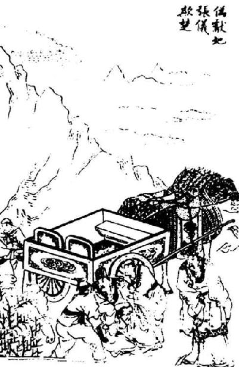
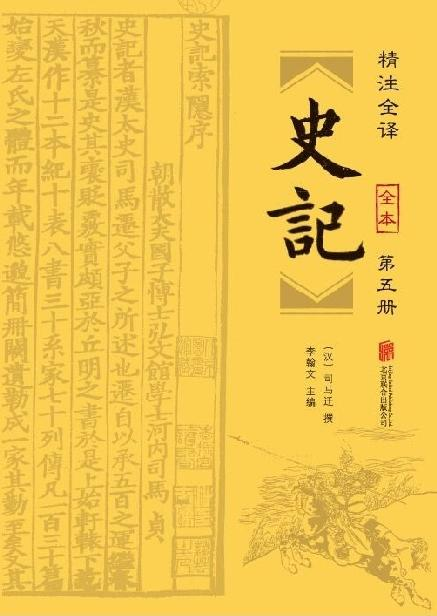
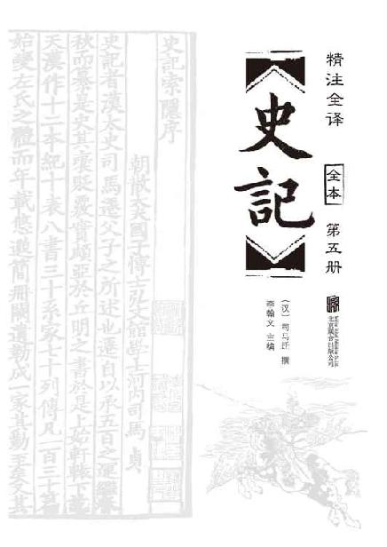

卷七十 张仪列传第十
张仪者，魏人也。始尝与苏秦俱事鬼谷先生，学术，苏秦自以不及张仪。
张仪已学游说诸侯。尝从楚相饮，已而楚相亡璧，门下意【意：猜疑，怀疑。】
张仪，曰：“仪贫无行，必此盗相君之璧。”共执张仪，掠笞数百，不服， 【
【
 ：古“释”字。】
之。其妻曰：“嘻！子毋读书游说，安得此辱乎？”张仪谓其妻曰：“视吾舌尚在不？”其妻笑曰：“舌在也。”仪曰：“足矣。”
：古“释”字。】
之。其妻曰：“嘻！子毋读书游说，安得此辱乎？”张仪谓其妻曰：“视吾舌尚在不？”其妻笑曰：“舌在也。”仪曰：“足矣。”
苏秦已说赵王而得相约从【从：同“纵”。】 亲，然恐秦之攻诸侯，败约后负，念莫可使用于秦者，乃使人微感张仪曰：“子始与苏秦善，今秦已当路，子何不往游，以求通子之愿？”张仪于是之赵，上谒【上谒：递上名帖请求进见。】 求见苏秦。苏秦乃诫门下人不为通，又使不得去者数日。已而见之，坐之堂下，赐仆妾之食。因而数让之曰：“以子之材能，乃自令困辱至此。吾宁不能言而富贵子，子不足收也。”谢去之。张仪之来也，自以为故人，求益，反见辱，怒，念诸侯莫可事，独秦能苦赵，乃遂入秦。
张仪，是魏国人。他当初曾与苏秦一同拜在鬼谷先生门下，学习游说之术，苏秦认为自己的才学比不上张仪。
张仪完成学业后，就去游说诸侯。有一次，他陪同楚国的丞相喝酒，不久丞相遗失了一块玉璧，门客都怀疑是张仪偷了玉璧，说：“张仪贫穷，品行不端，一定是他偷了丞相的玉璧！”于是大家一起捉住了张仪，拷打了他几百竹板，张仪始终没有承认，大家只好释放了他，他的妻子既悲又恨说：“唉，你要是不曾去读书游说，又怎么会遭受这样的屈辱呢？”张仪对他的妻子说：“你看我的舌头还在不在？”他的妻子笑着回答：“舌头还在。”张仪说：“这样就足够了。”
苏秦已经说服了赵王同意与除秦国外的另外六国合纵，缔结合纵联盟，但是苏秦又担心秦国乘机攻打各诸侯国，从而招致盟约在没有缔结之前就遭到了破坏。他正忧虑没有找到一个能派往秦国的人，于是他派人暗中引导张仪说：“你当初与苏秦的交情很好，现在他已经当权，你为什么不去结交他，以实现功成名就的志向呢？”张仪于是到了赵国，呈上名帖，请求拜见苏秦。苏秦却早已告诫守门的人不替张仪禀报，又设法让他好几天不能离开。不久，苏秦接见他，把他安排在堂下坐着，赏给他的饭菜是丫环仆人们吃的。并多次责备他说：“像你这样有才能的人，却让自己穷困潦倒到了这种地步。难道我没有能力推荐你并使你富贵吗？只是因为你不值得录用罢了。”苏秦说完就把张仪打发走了。张仪这次本是来投奔苏秦的，自认为是老朋友了，能够得到一些好处，不料反而被羞辱，很气愤，又考虑到各国诸侯中没有可以事奉的，唯独秦国才能威胁赵国，于是就到秦国去了。
苏秦已而告其舍人曰：“张仪，天下贤士，吾殆弗如也。今吾幸先用，而能用秦柄者，独张仪可耳。然贫，无因以进。吾恐其乐小利而不遂，故召辱之，以激其意。子为我阴奉之。”乃言赵王，发金币车马，使人微随张仪，与同宿舍，稍稍近就之，奉以车马金钱，所欲用，为取给，而弗告。张仪遂得以见秦惠王。惠王以为客卿，与谋伐诸侯。
苏秦之舍人乃辞去。张仪曰：“赖子得显，方且报德，何故去也？”舍人曰：“臣非知君，知君乃苏君。苏君忧秦伐赵败从约，以为非君莫能得秦柄，故感怒君，使臣阴奉给君资，尽苏君之计谋。今君已用，请归报。”张仪曰：“嗟乎，此在吾术中而不悟，吾不及苏君明矣！吾又新用，安能谋赵乎？为吾谢苏君，苏君之时，仪何敢言。且苏君在，仪宁渠【宁渠：如何，哪里。】 能乎！”张仪既相秦，为文檄告楚相曰：“始吾从若【若：你。】 饮，我不盗而【而：你，你的。】 璧，若笞我。若善守汝国，我顾且【顾且：反而将要。】 盗而城！”
不久之后，苏秦告诉自己的门客说：“张仪是天下有才能的人，我大概比不上他啊。现在我侥幸比他先受到重用，但是说到能够掌握秦国大权的人，只有张仪才行。然而他目前很贫穷，没有进用的机会。我担心他为了满足小的利益，不再进取，不能成就大的功业，所以把他召来当面羞辱他，来激发他的斗志。请你替我暗中帮助他吧。”苏秦将自己的打算奏明赵王以后，拿出金钱和车马，派人暗中跟随张仪，与张仪投宿在同一间客栈，逐渐接近他，还拿出车马钱财供他使用，凡是张仪需要的，都能供给他，却并没有告诉他实情。张仪终于得以拜见秦惠王。秦惠王任用张仪做客卿，与他商谋攻打各国诸侯。
苏秦派来的门客这才向张仪告辞。张仪说：“有赖于您的帮助，我才得以显赫，正打算报答您的恩德，为什么选择离开我呢？”这位门客回答说：“我并不了解您，真正了解您的是苏先生。苏先生担心秦国攻打赵国而使他的合纵盟约不能成功，认为除了您没有谁能掌握秦国的大权，因此故意激怒您，然后派我暗中向您供给钱财，这一切都是苏先生事先计划好的。现在您已经得到了重用，请让我返回赵国向苏先生复命。”张仪说：“唉，这些权谋都是我曾经研习过的，而我却没有察觉出来，我没有苏先生高明，这是很明显的！况且我刚刚被任用，又怎么能图谋攻打赵国呢？请您替我感谢苏先生，只要苏先生当权，我张仪怎么敢妄言攻打赵国呢？况且只要是苏先生当政，我张仪哪里具备这个能力呢！”张仪出任秦国的相国后，写信警告楚国的丞相说：“当初我陪你饮酒，并没有盗窃你的玉璧，可你却打了我竹板。你要好好地守住你的国家，我马上将要盗取你的城池！”
苴【苴：即巴国。】 蜀相攻击，各来告急于秦。秦惠王欲发兵以伐蜀，以为道险狭难至，而韩又来侵秦，秦惠王欲先伐韩，后伐蜀，恐不利，欲先伐蜀，恐韩袭秦之敝。犹豫未能决。司马错与张仪争论于惠王之前，司马错欲伐蜀，张仪曰：“不如伐韩。”王曰：“请闻其说。”
仪曰：“亲魏善楚，下兵三川，塞什谷之口，当屯留之道，魏绝南阳，楚临南郑，秦攻新城、宜阳，以临二周之郊，诛周王之罪，侵楚、魏之地。周自知不能救，九鼎宝器必出。据九鼎，案图籍【图籍：地图和户籍。】 ，挟天子以令于天下，天下莫敢不听，此王业也。今夫蜀，西僻之国而戎翟之伦也，敝兵劳众不足以成名，得其地不足以为利。臣闻争名者于朝，争利者于市。今三川、周室，天下之朝市也，而王不争焉，顾争于戎翟，去王业远矣。”
巴国和蜀国相互进犯，分别来秦国告急求援。秦惠王打算出动军队讨伐蜀国，又考虑到蜀道险要、狭窄，不容易到达，这时韩国又借机侵犯秦国，秦惠王想先攻打韩国，然后讨伐蜀国，担心不能取胜；想先攻打蜀国，又担心韩国趁秦军久战疲敝前来偷袭，因此犹豫不决，拿不定主意。司马错与张仪在秦惠王面前争论不休，司马错主张讨伐蜀国，张仪说：“不如先攻打韩国。”秦惠王说：“请让我听一听你们各自的理由。”
张仪说：“我们先与魏国亲近，与楚国交好，然后派兵前往三川，堵住什谷的入口，阻塞屯留的要道，使魏国到韩国南阳的道路断绝，让楚国出兵逼近南郑，秦国则攻打新城、宜阳，从而径直逼近西周、东周的城郊，声讨周王的罪过，再攻占楚国、魏国的土地。周王自知局势无法挽救，一定会献出九鼎宝器。秦国占有了九鼎宝器，掌握着天下的地图和户籍，这样一来就可以挟持周天子而向天下发号施令，天下各诸侯国没有谁敢不听从。这正是统一天下的大业。如今，看那蜀国，不过是西边偏远的国家，像戎狄一样的落后的种族。我们去攻打它，搞得士兵疲敝、百姓劳苦，也不能达到扬名天下的目的，夺取了他们的土地，也算不上是获利。我听说过这样的话：追求名位要到朝廷去，追求利益要到集市上去。如今的三川、周室就如同天下的朝廷和集市啊，大王您不到那里去争夺，反而到戎狄那样落后的地区去争夺，这距离您帝王的功业太遥远了。”
司马错曰：“不然。臣闻之，欲富国者务广其地，欲强兵者务富其民，欲王者务博其德，三资者备而王随之矣。今王地小民贫，故臣原先从事于易。夫蜀，西僻之国也，而戎翟之长也，有桀纣之乱。以秦攻之，譬如使豺狼逐群羊。得其地足以广国，取其财足以富民缮兵【缮兵：供给军队食粮。缮，通“膳”。】 ，不伤众而彼已服焉。拔一国而天下不以为暴，利尽西海【西海：指蜀川。】 而天下不以为贪，是我一举而名实附也，而又有禁暴止乱之名。今攻韩，劫天子，恶名也，而未必利也，又有不义之名，而攻天下所不欲，危矣。臣请谒其故：周，天下之宗室也；齐，韩之与国也。周自知失九鼎，韩自知亡三川，将二国并力合谋，以因乎齐、赵而求解乎楚、魏，以鼎与楚，以地与魏，王弗能止也。此臣之所谓危也。不如伐蜀完。”
惠王曰：“善，寡人请听子。”卒起兵伐蜀，十月，取之，遂定蜀，贬蜀王更号为侯，而使陈庄相蜀。蜀既属秦，秦以益强，富厚，轻诸侯。
司马错说：“不是这样。我听说想要使国家富强的人，一定要开拓他的疆土；想要使军队强大的人，一定要使百姓富裕；想要统一天下的人，一定要广施德政，具备了这三个条件，帝王之业也就随之实现了。现在大王的疆土还狭小，百姓还贫穷，所以我希望先从容易办到的事情做起。蜀国是西方偏远的国家，却是戎狄的首领，已经发生了类似夏桀、商纣那样的祸乱。出动秦国的军队去攻打它，就如同让豺狼去驱赶羊群一样。占领了蜀国的土地，就可以扩大秦国的疆土，夺取蜀国的财富，就可以使百姓富裕，供养军队，用不着损兵折将就可以使蜀国臣服。我们攻克了一个蜀国，而天下的人并不认为我们残暴；占有了蜀国所有的财富，而天下的人并不认为我们贪婪，所以，只是出动军队这样一个举动就能名利双收，而且还可以获得禁止暴乱的美名。现在如果去攻打韩国，劫持周天子，是非常不好的名声，而且未必能够得到实际的利益，还会落得不义的丑名，所以攻打韩国这个天下人都不愿意攻打的国家，是非常危险的。请求大王允许我陈述理由：周王室是天下共有的宗室；是与齐国、韩国交往密切的国家。周王室料到自己将要失去传国的九鼎，韩国料到自己将要失去三川，这两个国家势必会通力合作，依赖齐国、赵国的力量，与楚国、魏国谋求和解，如果周王室把九鼎宝器送给楚国，韩国将土地割让给魏国，大王是不可能阻止的，这就是我所说的危险所在啊。所以比不上攻打蜀国那样稳妥。”
秦惠王说：“好，我就听从您的建议。”终于起兵讨伐蜀国，当年十月就攻占了蜀国，平定了蜀国的暴乱，贬谪蜀王，改封号为蜀侯，并派遣陈庄担任蜀的相国。蜀国归属秦国以后，秦国因此变得更加强大、富裕了，更加轻视其他诸侯了。
秦惠王十年，使公子华与张仪围蒲阳，降之。仪因言秦复与魏，而使公子繇质于魏。仪因说魏王曰：“秦王之遇魏甚厚，魏不可以无礼。”魏因入上郡、少梁，谢秦惠王。惠王乃以张仪为相，更名少梁曰夏阳。
仪相秦四岁，立惠王为王。居一岁，为秦将，取陕。筑上郡塞。
其后二年，使与齐、楚之相会啮桑。东还而免相，相魏以为秦，欲令魏先事秦而诸侯效之。魏王不肯听仪。秦王怒，伐取魏之曲沃、平周，复阴厚张仪益甚。张仪惭，无以归报。留魏四岁而魏襄王卒，哀王立。张仪复说哀王，哀王不听。于是张仪阴令秦伐魏。魏与秦战，败。
明年，齐又来败魏于观津。秦复欲攻魏，先败韩申差军，斩首八万，诸侯震恐。而张仪复说魏王曰：“魏地方【方：方圆，面积。】 不至千里，卒不过三十万。地四平，诸侯四通辐凑，无名山大川之限。从郑至梁二百余里，车驰人走，不待力而至。梁南与楚境，西与韩境，北与赵境，东与齐境，卒戍四方，守亭鄣者不下十万。梁之地势，固战场也。梁南与楚而不与齐，则齐攻其东；东与齐而不与赵，则赵攻其北；不合于韩，则韩攻其西；不亲于楚，则楚攻其南：此所谓四分五裂之道也。
秦惠王十年（前328年），惠王派遣公子华和张仪率领军队围攻魏国的蒲阳，使之降服了。张仪建议秦王把蒲阳归还给魏国，并派公子繇到魏国做人质。张仪又趁机劝告魏王说：“秦国对魏国如此宽厚仁德，魏国不可以不以礼相报。”魏国因此把上郡、少梁献给了秦国，用以答谢秦惠王。惠王于是任用张仪为相国，并把少梁更名为夏阳。
张仪担任秦国的相国四年，正式拥戴秦惠王为王。又过了一年，张仪担任秦国的将军，率领军队攻取了陕邑。在上郡修筑要塞。
又过了两年，秦王派张仪到啮桑，与齐国相国和楚国相国会盟。张仪从东方回国后，被免掉了相国的职位，为了秦国的利益，他去魏国担任相国，打算使魏国首先称臣事奉秦国，然后再让其他各诸侯国仿效魏国。但魏王不肯听从张仪的建议。秦王很愤怒，出动军队攻取了魏国的曲沃、平周两城，同时暗中给张仪更加优厚的待遇。张仪觉得很惭愧，感到没有什么来回敬报答秦王。张仪留任魏国四年后，魏襄王去世了，魏哀王登基为王。张仪又劝说魏哀王归附秦国，哀王没有听从。于是张仪暗中让秦国攻打魏国。魏发兵与秦国交战，被秦国打败。
第二年，齐国也来攻打魏国，在观津打败了魏军。秦国想要再次攻打魏国，先打败了韩申差率领的军队，斩杀了八万官兵，使各国诸侯惊恐万分。张仪于是再次游说魏王说：“魏国的领土面积不到一千里，士兵不超过三十万。四周地势平坦，像车轴的中心一样与各国诸侯四通八达，又没有高山大河的隔绝。从新郑到大梁有二百多里的路程，不论是战车还是步兵，都不用花费多少力气就已经到了。魏国的南边与楚国相接，西边与韩国相接，北边与赵国相接，东边与齐国相接，如果要有军队戍守在四方边境，只是守卫边塞堡垒的兵士就需要十万以上。魏国的地势，本来就是一个战场。如果魏国向南边与楚交好而不与东边的齐国交好，那么齐国就会在东边攻打魏国；如果魏国与东边的齐国友好而不与赵国交好，那么，赵国就会在北攻打魏国；如果魏国与韩国不和，那么韩国就会在西边攻打魏国；如果魏国与楚国不亲，那么楚国就会在南边侵犯魏国：这正是人们所说的四分五裂的地理形势。
“且夫诸侯之为从者，将以安社稷尊主强兵显名也。今从者一天下，约为昆弟，刑白马以盟洹huán水之上，以相坚也。而亲昆弟同父母，尚有争钱财，而欲恃诈伪反复苏秦之余谋，其不可成亦明矣。
“大王不事秦，秦下兵攻河外，据卷、衍、燕、酸枣，劫卫取阳晋，则赵不南，赵不南而梁不北，梁不北则从道绝，从道绝则大王之国欲毋危不可得也。秦折韩而攻梁，韩怯于秦，秦韩为一，梁之亡可立而须也。此臣之所为大王患也。
“为大王计，莫如事秦。事秦则楚、韩必不敢动；无楚、韩之患，则大王高枕而卧，国必无忧矣。
“且夫秦之所欲弱者莫如楚，而能弱楚者莫如梁。楚虽有富大之名而实空虚；其卒虽多，然而轻走【轻走：容易逃跑。】 易北，不能坚战。悉梁之兵南面而伐楚，胜之必矣。割楚而益梁，亏楚而适秦，嫁祸安国，此善事也。大王不听臣，秦下甲士而东伐，虽欲事秦，不可得矣。
“且夫从人多奋辞【奋辞：说大话。】 而少可信，说一诸侯而成封侯，是故天下之游谈士莫不日夜扼腕【扼腕：失意、愤恨的样子。】 瞋目切齿以言从之便，以说人主。人主贤其辩而牵其说，岂得无眩哉。
“臣闻之，积羽沈舟，群轻折轴【群轻折轴：分量轻的东西积累多了能把车轴压断。比喻小问题多了也能酿成大祸。】 ，众口铄金，积毁销骨，故愿大王审定计议，且赐骸骨【赐骸骨：古代大臣请求致仕的委婉说法。】 辟魏。”
哀王于是乃倍从约而因仪请成于秦。张仪归，复相秦。三岁而魏复背秦为从。秦攻魏，取曲沃。明年，魏复事秦。
“况且，各国诸侯缔结合纵结盟的目的，是想凭借它求得国家安宁、君主尊崇、军队强大，从而使本国名声显赫。如今，那些主张合纵的国家想把天下当作一家，他们互相结为兄弟，在洹水边上宰杀白马，歃血为盟，用以表示恪守盟约的坚定信念。然而，即使是同一父母所生的亲兄弟，也会发生争夺钱财的事，那么合纵各国打算凭借苏秦虚伪欺诈、反复无常的谋略来维持国家的安定，这样做一定会遭到失败，这是非常明显的了。
“假如大王不归附秦国，秦国就会出兵攻打黄河以南的地区，占领卷地、衍地、燕地、酸枣，劫持卫国，夺取阳晋，那么赵国的军队就不能南下支持魏国；赵国的军队不能南下支持魏国而魏国的军队也不能北上，合纵联盟的信道就断绝了；合纵联盟的道路一旦被断绝，大王的国家要想不遭受危难是不可能的。秦国使韩国屈服，进而攻打魏国，韩国害怕秦国，与秦国合为一体，那么魏国的灭亡就近在眼前了。这就是我之所以替大王担忧的缘故。
“现在为大王着想，最好是事奉秦国。如果您事奉秦国，那么楚国、韩国一定不敢轻举妄动；没有了韩国、楚国前来侵扰的外患，大王就可以高枕无忧了，国家一定没有什么值得忧虑的事情了。
“况且秦国最想削弱的国家莫过于楚国，而最能削弱楚国的国家莫过于魏国。楚国虽然有百姓富足、国家强大的名声，但实际上却很空虚；它的士兵虽然众多，然而总是轻易地临阵败逃，不能够奋战到底。假如魏国调集全部军队南下攻打楚国，一定可以打败楚国。割裂楚国而使魏国得到好处，毁损楚国而取悦秦国，转嫁灾祸，使自己的国家安定，这是一件好事。假如大王不听从我的建议，秦国就会出动精锐部队从东边进攻魏国，那时魏国再想投奔秦国，是不可能的了。
“况且那些主张合纵的人，他们大多只会讲大话，少有值得信赖的时候，他们只想游说一个国君，达到被赐封为侯的目的，所以天下从事游说的人没有不随时随地紧握手腕、瞪大眼睛、咬牙切齿地宣扬合纵的好处，用以打动各国的君主。君主赞赏他们的口才，觉得他们说得很好而受到影响，又怎么可能不被迷惑呢？
“我听说，羽毛虽然很轻，但堆积多了也能把船压沉；货物虽然很轻，但装载多了也能压断车轴；众人同口诋毁，能使金石般的事实销熔；集合很多人的诽谤，能把骨头般的真理毁灭。所以我请求大王慎重地拟定正确的策略，并请您允许我辞职离开魏国。”
于是，魏哀王背弃了合纵盟约，通过张仪，请求与秦国结交。张仪回到秦国后，重新担任相国。三年后，魏国又背弃了秦国，重新加入合纵盟约。秦国出动军队攻打魏国，夺取了魏国的曲沃城。第二年，魏国又再次归附秦国。
秦欲伐齐，齐楚从亲，于是张仪往相楚。楚怀王闻张仪来，虚上舍而自馆之。曰：“此僻陋之国，子何以教之？”仪说楚王曰：“大王诚能听臣，闭关绝约于齐，臣请献商于之地六百里，使秦女得为大王箕帚之妾【箕帚之妾：持箕帚的奴婢，借作妻妾的谦称。】 ，秦楚娶妇嫁女，长为兄弟之国。此北弱齐而西益秦也，计无便此者。”楚王大说而许之。群臣皆贺，陈轸独吊之。楚王怒曰：“寡人不兴师发兵得六百里地，群臣皆贺，子独吊，何也？”陈轸对曰：“不然，以臣观之，商于之地不可得而齐秦合，齐秦合则患必至矣。”楚王曰：“有说乎？”陈轸对曰：“夫秦之所以重楚者，以其有齐也。今闭关绝约于齐，则楚孤。秦傒贪夫孤国，而与之商于之地六百里？张仪至秦，必负王，是北绝齐交，西生患于秦也，而两国之兵必俱至。善为王计者，不若阴合而阳绝于齐，使人随张仪。苟与吾地，绝齐未晚也；不与吾地，阴合谋计也。”楚王曰：“原陈子闭口毋复言，以待寡人得地。”乃以相印授张仪，厚赂之。于是遂闭关绝约于齐，使一将军随张仪。
秦国想要攻打齐国，然而齐国和楚国都参加了合纵盟约，秦王便派遣张仪去楚国担任相国。楚怀王听说张仪来到了楚国，空出上等宾馆让他居住，并亲自去宾馆接待他。楚怀王问张仪道：“我的楚国是个偏远、鄙陋的国家，您有什么要指教我的吗？”张仪游说楚怀王说：“大王如果真的能够听从我的建议，紧闭城关，同齐国断绝盟约，我愿意请求秦王献给楚国商于一带方圆六百里的地方，派出秦国女子做大王的姬妾，秦、楚两国互相娶妻嫁女，永远结为兄弟国家。这样将可以向北削弱齐国，而西面的秦国也得到了好处，没有比这更好的策略了。”楚怀王非常高兴，听从了张仪的建议。大臣们都来向楚怀王表示祝贺，唯独陈轸向楚怀王表示哀悼。楚怀王愤怒地说：“我不用出动军队就得到了六百里的土地，大臣们都向我表示祝贺，唯独你表示哀悼，这是为什么？”陈轸回答说：“事情不是这样的，据我来看，大王不仅不可以得到商于一带的土地，而且齐国和秦国还可能联合起来，齐、秦两国一旦联合起来，那么楚国一定会大祸临头。”楚怀王说：“有什么理由吗？”陈轸回答说：“秦国之所以重视楚国，是因为楚国与背后的齐国结盟了。如今楚国要废除盟约，与齐国断绝往来，那么楚国就会孤立无援。秦国为什么重视一个孤立无援的楚国，而奉送它六百里土地呢？张仪回到秦国后，一定会背弃向大王的承诺。这样一来，楚国在北面与齐国断绝了盟约关系，在西面从秦国招来祸患，两国的军队一定会同时攻打楚国。我妥善地替大王想出了对策，不如暗中与齐联合，但表面上与齐国断绝关系，并派人跟随张仪去秦国。假如秦国给了我们土地，再与齐国断绝关系也不算晚；假如秦国不给我们土地，那就符合了我们的策略。”楚怀王说：“希望你把嘴巴闭上，不要再说话了，等着看我得到秦国的土地吧。”于是楚怀王将楚国的相印授给了张仪，还馈赠了大量礼物。于是就和齐国断绝了关系，废除了盟约，派了一员将军跟着张仪前往秦国。

伪献地张仪欺楚，选自《东周列国志》。
张仪至秦，详【详：通“佯”，假装。】 失绥【绥：古代指登车时手挽的绳子。】 堕车，不朝三月。楚王闻之，曰：“仪以寡人绝齐未甚邪？”乃使勇士至宋，借宋之符，北骂齐王。齐王大怒，折节而下秦。秦齐之交合，张仪乃朝，谓楚使者曰：“臣有奉邑六里，原以献大王左右。”楚使者曰：“臣受令于王，以商于之地六百里，不闻六里。”还报楚王，楚王大怒，发兵而攻秦。陈轸曰：“轸可发口言乎？攻之不如割地反以赂秦，与之并兵而攻齐，是我出地于秦，取偿于齐也，王国尚可存。”楚王不听，卒发兵而使将军屈匄gài击秦。秦齐共攻楚，斩首八万，杀屈匄，遂取丹阳、汉中之地。楚又复益发兵而袭秦，至蓝田，大战，楚大败，于是楚割两城以与秦平。
张仪到达秦国后，在上车时假装没有拉住绳子而从车上掉下来，摔伤了，因此三个月没有上朝。楚怀王听说这件事后，说：“张仪是因为我与齐国断交得不够彻底吧？”于是派勇士前往宋国，借了宋国的符节，进入北边的齐国，大骂齐王。齐王非常愤怒，折断符节，归附了秦国。秦国与齐国创建了邦交后，张仪才上朝，对楚国的使臣说：“我有秦王所赐的六里封地，愿意把它献给你们大王。”楚国的使臣说：“我奉楚王的命令，来接受商于六百里的土地，不曾听说是六里。”使臣回国向楚怀王复命，楚怀王勃然大怒，立刻出动军队攻打秦国。陈轸说：“我可以开口说话了吗？与其攻打秦国，还不如反过来割让土地贿赂秦国，再与秦国联合攻打齐国，这样我们虽然割让土地给了秦国，但是可以占领齐国的土地得到补偿，大王的国家还能够保存。”楚怀王没有听从，最终还是出兵了，派将军屈匄攻打秦国。秦国与齐国共同攻打楚国，斩杀了八万楚兵，杀死了屈匄，攻取了楚国的丹阳、汉中等地。楚国又增派军队去袭击秦国，在蓝田与秦军大战，楚军大败，于是楚国又割让了两座城池给秦国，同秦国议和。
秦要【要：有所倚仗而强求。】 楚欲得黔中地，欲以武关外【武关外：指商于之地。】 易之。楚王曰：“不原易地，原得张仪而献黔中地。”秦王欲遣之，口弗忍言。张仪乃请行。惠王曰：“彼楚王怒子之负以商于之地，是且甘心于子。”张仪曰：“秦强楚弱，臣善靳尚，尚得事楚夫人郑袖，袖所言皆从。且臣奉王之节使楚，楚何敢加诛。假令诛臣而为秦得黔中之地，臣之上原。”遂使楚。楚怀王至则囚张仪，将杀之。靳jìn尚谓郑袖曰：“子亦知子之贱于王乎？”郑袖曰：“何也？”靳尚曰：“秦王甚爱张仪而不【不：当作“必”。】 欲出之，今将以上庸之地六县赂楚，美人聘楚，以宫中善歌讴者为媵。楚王重地尊秦，秦女必贵而夫人斥矣。不若为言而出之。”于是郑袖日夜言怀王曰：“人臣各为其主用。今地未入秦，秦使张仪来，至重王。王未有礼而杀张仪，秦必大怒攻楚。妾请子母俱迁江南，毋为秦所鱼肉也。”怀王后悔，赦张仪，厚礼之如故。
秦国要挟楚国，想用武关以外的土地交换楚国的黔中一带的土地，楚王说：“我不愿意交换土地，只要得到张仪，我愿意献出黔中地区。”秦王想要派遣张仪去楚国，但不忍心说出来。张仪自己请求前往楚国。秦惠王说：“楚王恼恨您背弃了奉送商于之地的承诺，必将杀了您，才觉得满意。”张仪说：“秦国强大，楚国弱小，我和楚国的大夫靳尚的关系友好，靳尚能够去奉承楚王的夫人郑袖，而郑袖说的话楚王全都听从。况且我是奉大王的命令出使楚国的，楚国怎敢杀害我呢。假如杀了我而替秦国取得黔中地区，这也是我的最大愿望。”于是张仪出使楚国。张仪一到，楚怀王就把他囚禁了起来，打算杀掉他。靳尚对郑袖说：“您知道您将要被楚王抛弃吗？”郑袖问道：“为什么呢？”靳尚说：“秦王非常宠信张仪，一定会把他从监牢中救出来，打算用上庸所属的六个县的土地贿赂楚国，把美女嫁给楚王，用秦宫中擅长歌舞的女子作为陪嫁。楚王看重土地，就会敬重秦国，秦国的美女一定会受到爱重，而夫人就会被鄙弃。不如向大王替张仪说情，请求释放他。”郑袖于是日夜不停地向楚怀王进言说：“作为臣子，要各自为他们的君主效劳。现在土地还没有交给秦国，秦王就派遣张仪前来，这可是对大王尊重到了极点。大王还没有回礼，反而要杀掉张仪，秦王一定会大怒，进而出兵攻打楚国。我请求让我们母子二人搬到江南去住，以免像鱼肉一样被秦兵残害。”楚怀王后悔了，赦免了张仪，像过去一样优厚地对待他。
张仪既出，未去，闻苏秦死，乃说楚王曰：“秦地半天下，兵敌四国，被险带河，四塞以为固。虎贲【虎贲：勇士。】 之士百余万，车千乘，骑万匹，积粟如丘山。法令既明，士卒安难乐死，主明以严，将智以武，虽无出甲，席卷常山之险，必折天下之嵴，天下有后服者先亡。且夫为从者，无以异于驱群羊而攻勐虎，虎之与羊不格明矣。今王不与勐虎而与群羊，臣窃以为大王之计过也。
“凡天下强国，非秦而楚，非楚而秦，两国交争，其势不两立。大王不与秦，秦下甲据宜阳，韩之上地不通。下河东，取成皋，韩必入臣，梁则从风而动。秦攻楚之西，韩、梁攻其北，社稷安得毋危？
“且夫从者聚群弱而攻至强，不料敌而轻战，国贫而数举兵，危亡之术也。臣闻之，兵不如者勿与挑战，粟不如者勿与持久。夫从人饰辩虚辞，高主之节，言其利不言其害，卒有秦祸，无及【无及：没时间，来不及。】 为已。是故愿大王之孰计之。
“秦西有巴蜀，大船积粟，起于汶山，浮江已【已：通“以”。】 下，至楚三千余里。舫船【舫船：并合两艘小船。】 载卒，一舫载五十人与三月之食，下水而浮，一日行三百余里，里数虽多，然而不费牛马之力，不至十日而距扞hàn关。扞关惊，则从境以东尽城守矣，黔中、巫郡非王之有。秦举甲出武关，南面而伐，则北地绝。秦兵之攻楚也，危难在三月之内，而楚待诸侯之救，在半岁之外，此其势不相及也。夫恃弱国之救，忘强秦之祸，此臣所以为大王患也。
张仪被释放之后，还没来得及离开楚国，就听说苏秦去世了，于是向楚王游说：“秦国的土地占据了天下的一半，军队的实力足以抵挡四方的国家，四境都占据险要位置，有山河围绕，四周都设有要塞可以坚守。拥有勇武的战士一百多万，战车千辆，战马万匹，贮存的粮食堆积如山。法令严明，士兵们都不避艰难危险甘愿赴死，国君贤明而且威严，将帅有谋略而且勇武，即使没有出动军队，它的声威就能席卷险要的常山，折断天下的脊梁，天下凡是后归降的国家一定先灭亡。再说那些合纵的国家想要与秦国一较高低，无异于驱赶着羊群进攻凶猛的老虎，勐虎和绵羊不是匹敌的对手是非常明显的。如今大王不去亲附勐虎，反而去亲附一群绵羊，我私下认为大王的策略失误了。
“如今天下的强国，不是秦国就是楚国，不是楚国就是秦国，两国互相攻打，照这种形势发展下去，不可能使两个国家都存在下去。如果大王不亲附秦国，秦国将会发兵攻占宜阳，韩国上郡就被切断而不能通行。秦国再出兵攻取河东，占据成皋，韩国一定会向秦国称臣投降，魏国也会趁机采取行动。秦国进攻楚国的西边，韩国和魏国进攻楚国的北边，楚国能不危险吗？
“况且，那些主张合纵的人聚集的是一群弱小的国家，要攻打最强大的国家，不估计敌对国的力量便轻率地发动战争，国家贫穷却要屡次发动战事，这是使国家陷入危亡的策略。我听说过，军事力量没有对方强，就不要向对方挑起战事；粮食没有对方多，就不要同对方持久作战。那些主张合纵的人专讲一些狡辩、不切实际的言辞，抬高他们国君的品节，只说合纵带来的好处，不说它导致的危害，终于招来秦国的战祸，却来不及制止了。所以希望大王仔细考虑这个问题。
“秦国拥有西边的巴蜀之地，用大船满载粮食，从汶山出发，顺着长江而下，距楚国有三千多里。两船相并运送士兵，一只船可以载五十人和三个月的粮食，顺流而下，一天可走三百多里，路程虽然很长，但并不花费牛马牵引的力气，不到十天就可以抵达楚国的扞关。扞关的形势一紧张，那么边境以东的城邑就都要据城防守了，黔中、巫郡将不再属于大王您所有了。秦国再从扞关出发，向南面进攻，那么楚国的北部地区就要被切断。秦国攻打楚国，不用三个月，就能使楚国面临危难，然而楚国等待其他诸侯国出兵救援，却需要半年以上的时间，这势必等不及。依靠弱小国家的救援，忽略强秦的祸患，这是我替大王担心的原因。
“大王尝与吴人战，五战而三胜，阵卒尽矣；偏守新城，存民苦矣。臣闻功大者易危，而民敝者怨上。夫守易危之功而逆强秦之心，臣窃为大王危之。
“且夫秦之所以不出兵函谷十五年以攻齐、赵者，阴谋有合天下之心。楚尝与秦构难【构难：交锋，交战。】 ，战于汉中，楚人不胜，列侯执圭死者七十余人，遂亡汉中。楚王大怒，兴兵袭秦，战于蓝田。此所谓两虎相搏者也。夫秦楚相敝而韩魏以全制其后，计无危于此者矣。原大王孰计之。
“秦下甲攻卫阳晋，必大关天下之匈【匈：同“胸”，胸膛。】 。大王悉起兵以攻宋，不至数月而宋可举，举宋而东指，则泗上十二诸侯尽王之有也。
“凡天下而以信约从亲相坚者苏秦，封武安君，相燕，即阴与燕王谋伐破齐而分其地；乃详有罪出走入齐，齐王因受而相之；居二年而觉，齐王大怒，车裂苏秦于市。夫以一诈伪之苏秦，而欲经营天下，混一诸侯，其不可成亦明矣。
“今秦与楚接境壤界，固形亲之国也。大王诚能听臣，臣请使秦太子入质于楚，楚太子入质于秦，请以秦女为大王箕帚之妾，效万室之都以为汤沐之邑，长为昆弟之国，终身无相攻伐。臣以为计无便于此者。”
于是楚王已得张仪，而重出黔中地与秦，欲许之。屈原曰：“前大王见欺于张仪，张仪至，臣以为大王烹之；今纵【纵：释放。】 弗忍杀之，又听其邪说，不可。”怀王曰：“许仪而得黔中，美利也。后而倍之，不可。”故卒许张仪，与秦亲。
“大王曾经和吴国人作战，作战五次，三次取胜，上战场的士兵全都战死了；楚国为了守卫新占领的城邑，可活下来的百姓却太辛苦了。我听说功业太大的君主容易遭受危难，百姓疲惫困苦就怨恨国君。守护容易遭受危难的功业而违背强秦的意愿，我私下替大王感到危险。
“秦国之所以十五年不出函谷关发兵攻打齐国和赵国，是因为秦国在暗中策划，有一举吞并天下的雄心。楚国曾与秦国交战，双方在汉中作战，楚国被打败了，有七十多位高贵的侯爵、王公战死了，失去了汉中。大王十分恼怒，又发兵攻打秦国，又在蓝田打了一仗。这就是所谓的两虎相争啊。秦国和楚国相互攻打，消耗了实力，而韩国和魏国以其完整无损的兵力从后面进攻，没有什么策略能比这更加危险的了。希望大王仔细考虑这个问题。
“假如秦国出兵攻打卫都阳晋，必定会像锁住胸膛一样断绝天下的交通要道。大王出动全部军队进攻宋国，用不了几个月的时间就可以攻下宋国，攻占了宋国之后，再挥师向东，一路攻打，那么泗水流域的十二个小诸侯国便全都归大王所有了。
“苏秦游说天下各诸侯国凭借坚守盟约使六国合纵相亲，被封为武安君，出任燕国的相国，却暗地里与燕王谋划攻破齐国，并且瓜分它的土地；苏秦假装获罪于燕王，从燕国逃到齐国，齐王因此收留了他，并且任命他做了相国；两年之后，苏秦的阴谋被发觉，齐王大怒，在街市上把苏秦五马分尸了。仅凭一个狡诈虚伪的苏秦，却想要控制整个天下，让各国诸侯结为一体，他的策略不可能成功也是非常明显的了。
“如今秦国与楚国的领土相接，在地理形势上也应该是亲近的国家。大王如果能听取我的建议，我可以请求秦王派太子来楚国做人质，大王也派太子到秦国去做人质，把秦王的女儿嫁给大王，进献拥有万户人家的城邑，作为大王收取赋税供给沐浴费用，秦国与楚国长期结为兄弟友邻，永世不互相攻伐。我认为没有比这更好的策略了。”
此时楚怀王已经得到张仪，却难以遵守承诺割舍黔中地区给秦国，想要同意张仪的建议。屈原说：“前次大王被张仪欺骗，这次张仪来到楚国，我认为大王会烹杀他；如今释放了他，不忍心杀他，还听信他的盅惑，不能这样做。”楚怀王说：“答应张仪的建议可以保住黔中，这是美好而有利的事情。已经答应了他，之后又背弃他，不能这样做。”楚怀王终于答应了张仪的建议，与秦国结盟。
张仪去楚，因遂之韩，说韩王曰：“韩地险恶山居，五谷所生，非菽而麦，民之食大抵菽藿huò【菽藿：豆和豆叶。泛指粗劣的杂粮。】 羹。一岁不收，收不餍糟糠。地不过九百里，无二岁之食。料大王之卒，悉之不过三十万，而厮徒负养【负养：从事运输和饲养等劳役的人。】 在其中矣。除守徼亭鄣塞，见卒不过二十万而已矣。秦带甲百余万，车千乘，骑万匹，虎贲之士跿跔【跿跔：跳跃。指动作敏捷。】 科头【科头：不戴头盔。】 贯颐奋戟者，至不可胜计。秦马之良，戎兵之众，探前趹后【探前趹后：马的前腿探向前，后腿腾于后。指马賓士。】 蹄间三寻【寻：七尺为一寻。】 腾者，不可胜数。山东之士被甲蒙胄以会战，秦人捐甲徒裼【裼：脱去上衣。】 以趋敌，左挈人头，右挟生虏。夫秦卒与山东之卒，犹孟贲之与怯夫；以重力相压，犹乌获之与婴儿。夫战孟贲、乌获之士以攻不服之弱国，无异垂千钧之重于鸟卵之上，必无幸矣。
“夫群臣诸侯不料地之寡，而听从人之甘言好辞，比周以相饰也，皆奋曰‘听吾计可以强霸天下’。夫不顾社稷之长利而听须臾之说，诖误【诖误：因为受蒙蔽而犯过失。】 人主，无过此者。
“大王不事秦，秦下甲据宜阳，断韩之上地，东取成皋、荥阳，则鸿台之宫、桑林之苑非王之有也。夫塞成皋，绝上地，则王之国分矣。先事秦则安，不事秦则危。夫造祸而求其福报，计浅而怨深，逆秦而顺楚，虽欲毋亡，不可得也。
“故为大王计，莫如为秦。秦之所欲莫如弱楚，而能弱楚者如韩。非以韩能强于楚也，其地势然也。今王西面而事秦以攻楚，秦王必喜。夫攻楚以利其地，转祸而说秦，计无便于此者。”
韩王听仪计。
张仪离开楚国，乘此机会前往韩国，游说韩王说：“韩国地形险恶，处于山区，种植的粮食不是豆类就是麦子，老百姓吃的大多是豆子饭、豆叶汤。如果一年之内都没有收成，人们连糟糠都吃不饱。韩国领土纵横不到九百里，储存的粮食维持不了两年。估计大王的军队全部加起来不超过三十万，其中还要包括勤杂兵和后勤人员在内。除了守卫边界堡垒的士兵，可供调动的军队不超过二十万。而秦国的军队就有一百多万，战车达上千辆，战马有上万匹，士兵勇勐敏捷，不戴盔甲，奋勇向前，持戟冲锋的，多得无法计算。秦军的战马精良，马的前蹄扬起，后蹄腾空而起，一跃就是两丈一尺远，这样的马多得无法数清。山东六国的士兵披着铁甲，戴着头盔去决战，秦国的士兵脱掉盔甲，袒臂赤足地来迎敌，个个左手提着头颅，右手擒拿俘虏。拿秦国的士兵与山东六国的士兵相比较，如同勇士孟贲与软弱胆小的人相比；用巨大的威力压下去，就像大力士乌获与婴孩对抗。用孟贲、乌获那样的勇士去攻打不肯降服的弱小国家，相当于把千钧的重量直接压在鸟卵上，一定不存在侥幸的结果。
“那些诸侯国的国君和大臣们不考虑自己国土狭小，却去听信主张合纵的人的甜言蜜语，他们结党营私，互相掩饰，都慷慨激昂地说‘听从我的策略就可以在天下称霸’。不考虑国家的长远利益而听从片刻的游说，误导国君，没有比这更严重的了。
“如果大王不归附秦国，秦国就会出动军队占据宜阳，切断韩国上党地区，向东夺取成皋、荥阳，那么大王就不能再拥有鸿台的宫殿和桑林的苑囿。再说，阻塞了成皋，切断了上党地区，大王的国家就被分割了。先归附秦国就能得到安全，不归附秦国只会招来危险。如果制造了祸端却想要得到良好的回报，计谋短浅、鄙陋，并且结下了很深的怨仇，违背秦国而服从楚国，想要国家不灭亡，是不可能的。
“所以我替大王考虑了所有的计谋，最好的方法就是臣服秦国。秦国最想做的事情无非就是削弱楚国，而能够削弱楚国的国家中，没有谁比得上韩国。不是因为韩国比楚国强大，而是因为韩国的地理形势。如今，假如大王向西臣事秦国，进攻楚国，秦王一定很高兴。进攻楚国，不仅能在它的土地上取得利益，而且转移了自己的祸患，取悦了秦国，没有比这更适宜的计策了。”
韩王听取了张仪的计策。
张仪归报。秦惠王封仪五邑，号曰武信君。使张仪东说齐愍王曰：“天下强国无过齐者，大臣父兄殷众【殷众：众多。】 富乐。然而为大王计者，皆为一时之说，不顾百世之利。从人说大王者，必曰：‘齐西有强赵，南有韩与梁。齐，负海之国也，地广民众，兵强士勇，虽有百秦，将无奈齐何。’大王贤其说而不计其实。夫从人朋党比周，莫不以从为可。臣闻之，齐与鲁三战而鲁三胜，国以危亡随其后，虽有战胜之名，而有亡国之实。是何也？齐大而鲁小也。今秦之与齐也，犹齐之与鲁也。秦赵战于河漳之上，再战而赵再胜秦；战于番吾之下，再战又胜秦。四战之后，赵之亡卒数十万，邯郸仅存，虽有战胜之名而国已破矣。是何也？秦强而赵弱。今秦楚嫁女娶妇，为昆弟之国。韩献宜阳，梁效河外，赵入朝渑miǎn池，割河间以事秦。大王不事秦，秦驱韩梁攻齐之南地，悉赵兵渡清河，指博关，临菑、即墨非王之有也。国一日见攻，虽欲事秦，不可得也。是故愿大王孰计之也。”
齐王曰：“齐僻陋，隐居东海之上，未尝闻社稷之长利也。”乃许张仪。
张仪回到秦国汇报。秦惠王封赏了他五座城邑，封号是武信君。又派遣张仪向东出使齐国，游说齐愍王，说：“天下强大的国家没有哪个能比得上齐国，齐国的大臣都是同姓父兄，百姓众多，生活富足安乐。然而替大王出谋划策的人，全都为了暂时的安乐，而不顾及国家的长远利益。主张合纵的人在游说大王时，一定会说：‘齐国的西面有强大的赵国，南面有韩国和魏国。齐国是个背靠大海的国家，土地广阔，人口众多，军强兵勇，即使有一百个秦国，也不能把齐国怎么样。’大王对这种说法非常赞同，却考虑实际情况。主张合纵的人结党营私，没有谁不认为合纵是不可行的。我听说，齐国与鲁国打了三次仗，鲁国三次取得胜利，而鲁国却因此危险，随后就灭亡了，虽然有战胜的名声，但带来的却是国家灭亡的结果。为什么会如此呢？因为齐国很强大而鲁国却很弱小。现在，秦国与齐国相比较，就好比齐国与鲁国。秦国和赵国在黄河、漳水边上交战，交战了两次都是赵国取得看胜利；在番吾城下交战，又是赵国两次打败秦国。这四次战役以后，赵国的士兵阵亡的有好几十万，仅仅保住了邯郸，虽然赵国获得了战胜的名声，然而国家却破败不堪了。这是为什么呢？是因为秦国强大而赵国弱小。如今秦国和楚国互相嫁女娶妇，结成了兄弟友邦。韩国割让宜阳，魏国割让河外地区，赵王到渑池朝见秦王，割让河间一带来归附秦国。假如大王不归附秦国，秦国就会驱使韩国、魏国进攻齐国南部地区，调动赵国的全部军队，渡过清河，直指博关，临菑、即墨两城就不再为大王所拥有了。齐国一旦被攻破，再想要归附秦国，已经是不可能的了。因此希望大王仔细考虑这件事。”
齐王说：“齐国地方偏远落后，处在与世隔绝的东海边上，不曾听到过关于国家长远利益的高见。”于是答应了张仪的建议。
张仪去，西说赵王曰：“敝邑秦王使使臣效愚计于大王。大王收率天下以宾【宾：通“摈”。】 秦，秦兵不敢出函谷关十五年。大王之威行于山东，敝邑恐惧慑伏，缮甲厉【历：通“砺”。】 兵，饰车骑，习驰射，力田积粟，守四封之内，愁居慑处，不敢动摇，唯大王有意督过之也。
“今以大王之力，举巴蜀，并汉中，包两周，迁九鼎，守白马之津。秦虽僻远，然而心忿含怒之日久矣。今秦有敝甲凋兵，军于渑池，原渡河逾漳，据番吾，会邯郸之下，原以甲子合战，以正殷纣之事，敬使使臣先闻左右。
“凡大王之所信为从者恃苏秦。苏秦荧惑【荧惑：迷惑，眩惑。】 诸侯，以是为非，以非为是，欲反齐国，而自令车裂于市。夫天下之不可一亦明矣。今楚与秦为昆弟之国，而韩梁称为东藩之臣，齐献鱼盐之地，此断赵之右臂也。夫断右臂而与人斗，失其党而孤居，求欲毋危，岂可得乎？
“今秦发三将军：其一军塞午道，告齐使兴师渡清河，军于邯郸之东；一军军成皋，驱韩梁军于河外；一军军于渑池。约四国为一以攻赵，赵服，必四分其地。是故不敢匿意隐情，先以闻于左右。臣窃为大王计，莫如与秦王遇于渑池，面相见而口相结，请案兵无攻。原大王之定计。”
赵王曰：“先王之时，奉阳君专权擅势，蔽欺先王，独擅绾事，寡人居属师傅，不与国谋计。先王弃群臣，寡人年幼，奉祀【奉祀：主持祭祀。这里指新君继位。】 之日新，心固窃疑焉，以为一从不事秦，非国之长利也。乃且愿变心易虑，割地谢前过以事秦。方将约车趋行，适闻使者之明诏。”赵王许张仪，张仪乃去。
张仪离开齐国，向西行游说赵王说：“敝国的秦王派遣我做使臣，向大王进献不成熟的策略。大王领导天下诸侯共同抵御秦国，使秦国的军队十五年不敢出函谷关。大王的声威已经传遍山东各国，我们秦国非常害怕，屈服不敢妄动，整治军备，磨砺武器，整顿兵车战马，练习跑马射箭，勤奋耕种，储存粮食，守卫在四方边境，忧愁敬畏地过着日子，不敢轻举妄动，惟恐大王深深地责备我们的过错。
“如今依靠大王的督促之力，秦国已经攻占了巴、蜀，吞并了汉中，取得西周和东周，迁走九鼎宝器，据守白马渡口。秦国虽然在偏僻、遥远的地方，然而压抑、愤怒的日子已经过得太久了。现在，秦国有一支穿着破旧甲衣，拿着残缺兵器的军队正驻守在渑池，打算渡过黄河，越过漳水，攻占番吾，与赵军在邯郸城下交会，希望在甲子这一天作战，效仿周武王伐纣的旧事，所以秦王特别派我作为使臣先来恭敬地告知大王及您的左右亲信。
“大王之所以信任并且能够缔结合纵盟约，是因为有苏秦作为依仗。苏秦迷惑诸侯，把正确的说成错误的，把错误的说成正确的，企图倾覆齐国，结果使自己在街市上被五马分尸。天下诸侯不可能结为一体是非常明显的了。如今，楚国和秦国已经结为了兄弟友邦，韩国和魏国自称是秦国在东边的属国，齐国向秦国献出盛产鱼盐的土地，这就好比斩断了赵国的右臂。断了右臂的人与别人争斗，如同失去了同伙而孤立无援，想要没有危险，怎么可能办到呢？
“现在秦国派出了三支军队：其中一支军队堵塞午道，通知齐国调动军队渡过清河，驻扎在邯郸的东面；一支军队驻扎在成皋，驱使韩国和魏国的军队驻扎在河外地区；一支军队驻扎在渑池。相约四国军队结为一体共同进攻赵国，赵国被攻破后，四个国家一定会瓜分它的国土。所以我不敢隐瞒真实的意图，先把它告诉给大王的左右亲信。我私下替大王考虑，不如与秦王在渑池会晤，当面做个口头约定，请求按兵不动，不要进攻。希望大王拿定主意。”
赵王说：“先王在世的时候，奉阳君独断专政，蒙蔽、欺骗先王，独断所有政事，我还生活在深宫，跟着老师学习，没有参与国家大事。先王去世时，我的年纪还小，继位的时间不长，我原本就在心中暗自怀疑合纵的做法，认为诸侯联合为一体而不臣事秦国，不是出于对赵国的长远利益作打算。所以我打算改变主意，割让土地来弥补以往的过失，归附秦国。我正准备安排车马前去请罪，恰好听到了您的英明指示。”赵王接受了张仪的建议，张仪便离开了赵国。
北之燕，说燕昭王曰：“大王之所亲莫如赵。昔赵襄子尝以其姊为代王妻，欲并代，约与代王遇于句注之塞。乃令工人作为金斗，长其尾，令可以击人。与代王饮，阴告厨人曰：‘即酒酣乐，进热啜，反斗以击之。’于是酒酣乐，进热啜【热啜：指热羹。】 ，厨人进斟，因反斗以击代王，杀之，王脑涂地。其姊闻之，因摩【摩：通“磨”，物体相摩擦。】 笄jī以自刺，故至今有摩笄之山。代王之亡，天下莫不闻。
“夫赵王之很【很：通“狠”。】 戾无亲，大王之所明见，且以赵王为可亲乎？赵兴兵攻燕，再围燕都而劫大王，大王割十城以谢。今赵王已入朝渑池，效河间以事秦。今大王不事秦，秦下甲云中、九原，驱赵而攻燕，则易水、长城非大王之有也。且今时赵之于秦犹郡县也，不敢妄举师以攻伐。今王事秦，秦王必喜，赵不敢妄动，是西有强秦之援，而南无齐赵之患，是故愿大王孰计之。”
燕王曰：“寡人蛮夷僻处，虽大男子裁【裁：裁断。】 如婴儿，言不足以采正计。今上客幸教之，请西面而事秦，献恒山之尾五城。”燕王听仪。
张仪向北到达燕国，游说燕昭王说：“大王最亲近的国家，无疑就是赵国。过去赵襄子曾经把他的姐姐嫁给了代王做妻子，想要吞并代国，就与代王约定在句注山的要塞会晤。他命令工匠制作了一个金斗，加长了斗柄，使它可以用来杀人。赵襄子与代王喝酒时，暗中吩咐厨子说：‘你趁着我们喝酒喝得酣畅的时候，送上热羹，把斗柄反转过来击杀代王。’在酒喝到酣畅高兴的时侯，上了热羹，厨子趁机上前装盛，立即反转斗柄去袭击代王，把他杀死了，代王的脑浆流了一地。赵襄子的姐姐听说这个消息后，将簪子磨锋利，自刺而死，所以至今还有一座叫摩笄的山。代王是如何死去的，天下没有谁不知道。
“赵王如此凶狠暴戾、六亲不认，大王已经看得很清楚了，还认为赵王是值得亲近的人吗？赵国出动军队攻打燕国，两次围困了燕的都城胁迫大王，逼迫大王割让十座城池向他道歉。如今，赵王已经到渑池朝见秦王，献出河间一带来归附秦国。现在，假如大王不归附秦国，秦国将出动军队直下云中、九原，驱使赵国攻打燕国，如此一来，易水、长城就不再为大王所拥有了。况且，现在的赵国相对于秦国而言，如同秦国的一个郡县，不敢妄自出兵攻伐。眼下大王如果向秦国臣服，秦王一定非常高兴，而赵国又不敢轻举妄动，这样一来，燕国在西面有强大的秦国的支持，南面不再受齐国和赵国侵犯，所以我希望大王慎重地考虑这个建议。”
燕王说：“我生活在偏僻的蛮夷之地，这里的人即使是成年男子，裁断事情时却像婴儿，说的话不足以作为正确的决策。如今有幸接受贵客的指教，我愿意向西臣服秦国，献出恒山脚下的五座城池。”燕王听从了张仪的建议。
仪归报，未至咸阳而秦惠王卒，武王立。武王自为太子时不说张仪，及即位，群臣多谗张仪曰：“无信，左右卖国以取容。秦必复用之，恐为天下笑。”诸侯闻张仪有却武王，皆畔衡【衡：通“横”，指连横策略。】 ，复合从。
秦武王元年，群臣日夜恶张仪未已，而齐让又至。张仪惧诛，乃因谓秦武王曰：“仪有愚计，愿效之。”王曰：“奈何？”对曰：“为秦社稷计者，东方有大变，然后王可以多割得地也。今闻齐王甚憎仪，仪之所在，必兴师伐之。故仪原乞其不肖之身之梁，齐必兴师而伐梁。梁齐之兵连于城下而不能相去，王以其间伐韩，入三川，出兵函谷而毋伐，以临周，祭器【祭器：祭祀所用的礼器。】 必出。挟天子，按图籍，此王业也。”秦王以为然，乃具革车三十乘，入仪之梁。齐果兴师伐之。梁哀王恐。张仪曰：“王勿患也，请令罢齐兵。”乃使其舍人冯喜之楚，借使之齐，谓齐王曰：“王甚憎张仪；虽然，亦厚矣王之托仪于秦也！”齐王曰：“寡人憎仪，仪之所在，必兴师伐之，何以讬仪？”对曰：“是乃王之托仪也。夫仪之出也，固与秦王约曰：‘为王计者，东方有大变，然后王可以多割得地。今齐王甚憎仪，仪之所在，必兴师伐之。故仪愿乞其不肖之身之梁，齐必兴师伐之。齐梁之兵连于城下而不能相去，王以其间伐韩，入三川，出兵函谷而无伐，以临周，祭器必出。挟天子，案图籍，此王业也。’秦王以为然，故具革车三十乘而入之梁也。今仪入梁，王果伐之，是王内罢【罢：同“疲”，疲敝。】 国而外伐与国，广邻敌【邻敌：邻近的敌国。】 以内自临，而信仪于秦王也。此臣之所谓‘讬仪’也。”齐王曰：“善。”乃使解兵。
张仪相魏一岁，卒于魏也。
张仪返回秦国复命，还没有到达咸阳，秦惠王就去世了，秦武王即位。武王还是太子的时候就对张仪没有好感，等到即位后，大臣中有很多人说张仪的坏话：“张仪不讲信用，反复无常地出卖了很多国家来取得国君的善待。如果秦国一定要继续重用他，恐怕会被天下人所耻笑。”各国的诸侯听说张仪与秦武王有隔阂，纷纷背叛了连横，又恢复了合纵联盟。
秦武王元年（前310年），大臣们日夜不停地诋毁张仪，齐国又派使臣来谴责张仪。张仪害怕被杀害，就趁机对秦武王说：“我有一个不成熟的计策，愿意献给大王。”武王问：“什么计策？”张仪回答说：“为秦国的利益着想，必须使东方发生大变故，大王才能够让其他国家献出更多的土地。现在听说齐王非常憎恨我，我去哪个国家，齐王一定会出兵攻打这个国家。我乞求让我这个没有才能的人前往魏国，齐国一定会发动军队攻打魏国。魏国和齐国的军队在城下交战而不得脱身，大王就趁此机会攻打韩国，进入三川，从函谷关发兵，但不要攻打别的国家，直接兵临周都，周天子一定会献出祭器。大王就可以挟持周天子，掌握天下的地图和户籍，这是成就帝王的功业啊。”秦武王认为张仪说得有道理，就准备了三十辆兵车，送张仪到魏国去。齐国果然出动军队攻打魏国。魏哀王非常惊恐。张仪说：“大王不要担忧，请允许我出使齐国，一定让齐国罢兵。”张仪于是派遣他的家臣冯喜前往楚国，再作为楚国的使臣出使齐国，对齐王说：“大王非常憎恨张仪；虽然如此，大王却使张仪在秦国更受信赖。”齐王说：“我十分憎恨张仪，张仪走到哪里，我一定出兵讨伐哪里，为什么说是更使张仪有受到信赖呢？”冯喜回答说：“这样做正是使张仪更受信赖。张仪离开秦国时，本来与秦王有约定，说：‘替大王打算，必须使东方发生大变乱，大王才能够多割得一些土地。现在齐王非常憎恨我，我在哪个国家，他一定会出兵攻打那个国家。我乞求让我这个没有才能的人到魏国去，齐王一定会出兵攻打魏国。齐国和魏国的军队在城下交战而不得脱身，大王趁机攻打韩国，进军三川，从函谷关出兵，但不要攻打别的国家，直接兵临周都，周天子一定会献出祭器。大王就可以挟持周天子，掌握天下的地图和户籍，这是成就帝王的功业。’秦王认为他说得有道理，所以用三十辆兵车送他去魏国。现在张仪到了魏国，大王果真出兵攻打魏国，这样做对内消耗了国家的实力，对外是在攻打盟国，广泛地树立敌人，祸患殃及自己，这就是我所说的‘让张仪更受信赖’。”齐王说：“你说得对。”于是停止对魏国用兵。
王世贞：“仪曾伐魏，取蒲阳，又伐魏，取陕，今乃出而相魏；仪之反复固不足责，魏乃举国听之，几何而不亡也！”
张仪在魏国担任了一年的相国，就死在魏国。
陈轸zhěn者，游说之士。与张仪俱事秦惠王，皆贵重，争宠。张仪恶陈轸于秦王曰：“轸重币轻使秦楚之间，将为国交也。今楚不加善于秦而善轸者，轸自为厚而为王薄也。且轸欲去秦而之楚，王胡不听乎？”王谓陈轸曰：“吾闻子欲去秦之楚，有之乎？”轸曰：“然。”王曰：“仪之言果信矣。”轸曰：“非独仪知之也，行道之士尽知之矣。昔子胥忠于其君而天下争以为臣，曾参孝于其亲而天下愿以为子。故卖仆妾不出闾巷而售者，良仆妾也；出妇【出妇：被丈夫休弃的妇女。】 嫁于乡曲者，良妇也。今轸不忠其君，楚亦何以轸为忠乎？忠且见弃，轸不之楚何归乎？”王以其言为然，遂善待之。
居秦期年，秦惠王终相张仪，而陈轸奔楚。楚未之重也，而使陈轸使于秦。过梁，欲见犀首。犀首谢弗见。轸曰：“吾为事来，公不见轸，轸将行，不得待异日【异日：指第二天。】 。”犀首见之。陈轸曰：“公何好饮也？”犀首曰：“无事也。”曰：“吾请令公厌事可乎？”曰：“奈何？”曰：“田需约诸侯从亲，楚王疑之，未信也。公谓于王曰：‘臣与燕、赵之王有故，数使人来，曰：“无事何不相见？”原谒行于王。’王虽许公，公请毋多车，以车三十乘，可陈之于庭，明言之燕、赵。”燕、赵客闻之，驰车告其王，使人迎犀首。楚王闻之大怒，曰：“田需与寡人约，而犀首之燕、赵，是欺我也。”怒而不听其事。齐闻犀首之北，使人以事委焉。犀首遂行，三国相事皆断于犀首。轸遂至秦。
陈轸是一个游说之士。他和张仪共同侍奉秦惠王，都得到了重用，经常争宠。张仪在秦惠王面前中伤陈轸说：“陈轸携带了丰厚的礼物频繁地来往于秦、楚两国之间，本应该搞好两国的外交关系。如今楚国并没有对秦国更加友好，反而对陈轸十分优待，这是因为陈轸替自己打算得多而替大王打算得少的缘故啊。而且陈轸想要离开秦国前往楚国，大王为什么不让他离开呢？”秦惠王对陈轸说：“我听说先生想要离开秦国而去投奔楚国，有这样的事情吗？”陈轸说：“有。”秦惠王说：“张仪的话果然是可信的。”陈轸说：“这件事不仅张仪知道，而且连路上的行人也都知道。过去伍子胥忠于他的国君，因而天下诸侯争相聘他做臣子；曾参孝敬他的父母，天下的父母都希望让他来给自己做儿子。所以，将要出卖的奴仆不用走出街巷就卖掉了，因为是好奴仆；被丈夫抛弃的女人还能再嫁到本乡本里，因为是好女人。如果我对自己的国君不忠诚，楚王又怎么会认为我是忠心的臣子呢？忠心却要被抛弃，我不去楚国又应该投奔到哪里去呢？”秦惠王认为陈轸的话说得有道理，于是便更好地对待他。
陈轸在秦国待了整整一年，秦惠王终于任命张仪为相国，陈轸便去投奔楚国了。楚王没有重用他，却派遣他出使秦国。陈轸经过魏国的时候，想要见一见犀首。犀首拒绝相见。陈轸说：“我是有重要的事情才来的，您不见我，我就要走了，等不到第二天。”犀首便接见了陈轸。陈轸说：“您怎么喜欢喝起酒来了呢？”犀首说：“没有事情可以做。”陈轸说：“请允许我让您的事情多起来，如何？”犀首问：“要怎么办呢？”陈轸说：“魏相田需邀请聚集各国的诸侯合纵联盟，楚王怀疑他，不信任他。您去对魏王说：‘我与燕国和赵国的国君都有旧交情，他们多次派人来对我说：“你闲着没事，为什么不互相见面？”我愿意替大王您去谒见他们。’魏王即使答应您的请求，您也不必多要车辆，只需要把三十辆车子摆放在庭院里，公开地说要到燕国和赵国去。”燕国和赵国的客卿们听到了这个消息，都立刻驱车回国向他们的国君报告，两国都派人来魏国迎接犀首。楚王听到这件事后，非常气愤，说：“魏相田需来与我结约，而魏国的犀首却去了燕国和赵国，这是欺骗我啊。”楚王在大怒之下，没有听信合纵的事。齐王听说犀首去了北方，派人把国家政事委托给他。犀首于是就启程出发了，燕、赵、齐三国的相国事务都要由犀首来处理。陈轸于是回到秦国。
韩魏相攻，期年不解。秦惠王欲救之，问于左右。左右或曰救之便，或曰勿救便，惠王未能为之决。陈轸适至秦，惠王曰：“子去寡人之楚，亦思寡人不？”陈轸对曰：“王闻夫越人庄舄xì乎？”王曰：“不闻。”曰：“越人庄舄仕楚执圭，有顷【有顷：不久。】 而病。楚王曰：‘舄故越之鄙细【鄙细：地位微贱。】 人也，今仕楚执圭，贵富矣，亦思越不？’中谢【中谢：指侍御之官。】 对曰：‘凡人之思故，在其病也。彼思越则越声，不思越则楚声。’使人往听之，犹尚越声也。今臣虽弃逐之楚，岂能无秦声哉！”惠王曰：“善。今韩魏相攻，期年不解，或谓寡人救之便，或曰勿救便，寡人不能决，愿子为子主计之余，为寡人计之。”陈轸对曰：“亦尝有以夫卞庄子刺虎闻于王者乎？庄子欲刺虎，馆竖子止之，曰：‘两虎方且食牛，食甘必争，争则必斗，斗则大者伤，小者死，从伤而刺之，一举必有双虎之名。’卞庄子以为然，立须之。有顷，两虎果斗，大者伤，小者死。庄子从伤者而刺之，一举果有双虎之功。今韩魏相攻，期年不解，是必大国伤，小国亡，从伤而伐之，一举必有两实。此犹庄子刺虎之类也。臣主与王何异也。”惠王曰：“善。”卒弗救。大国果伤，小国亡，秦兴兵而伐，大克之。此陈轸之计也。
韩国和魏国交战，整整一年都没有和解。秦惠王打算援助一方，征求左右亲信大臣的意见。大臣们有的说去救援有利，有的说不救援有利，秦惠王对这件事不能做出决断。正好遇到陈轸回到秦国，秦惠王便问他说：“先生离开我去了楚国，也想念我吗？”陈轸回答说：“大王听说过越国人庄舄吗？”秦惠王说：“没有听说过。”陈轸说：“越国人庄舄在楚国为官，获得了执圭的爵位，不久就生病了。楚王问：‘庄舄原本是越国一个地位低贱的人，如今在楚国为官，获得了执圭的爵位，富贵了，不知道还思不思念越国？’一位侍从回答说：‘人们思念自己的故乡，通常是在他生病的时候。如果庄舄思念越国，在呻吟时则会操越国的口音；如果庄舄不思念越国，则会是楚国的口音。’楚王派人去庄舄那里偷听，庄舄的呻吟声仍然是越国的口音。如今我虽然被遗弃，投奔到了楚国，怎能忘记秦国的口音呢！”秦惠王说：“说得好。现在韩国和魏国交战，整整一年了都没有和解，有人对我说让它们和解有利，有人对我说让它们不和解有利，我不能作出决断，希望先生能在替您的楚国国君出谋划策之余，也替我出个主意。”陈轸回答说：“也曾经有人把卞庄子刺虎的故事讲给大王听吗？庄子正准备刺杀老虎，旅馆里的小伙子阻止了他，说：‘两只老虎正要吃牛，等它们吃到有滋味的时候一定会互相争夺，一争夺就一定会打起来，一打起来，结果就会是大虎受伤，小虎死亡，这时再去追逐受伤的老虎，刺杀它，就获得了一举杀死两只老虎的名声。’卞庄子认为他说得有道理，站在旁边等待时机。不久之后，两只老虎果真争斗起来，大的受伤了，小的死了。庄子追赶上受伤的老虎并且杀死了它，这一举果然获得了杀死双虎的功劳。如今韩国和魏国互相攻打，一年都不能和解，这样势必会使大国受损，小国危亡，兴兵讨伐受损的国家，这一举一定会获得击破两个国家的胜利果实。这就如同卞庄子刺虎一样。我替自己的君主出主意和替大王出主意应该是没有什么区别的。”秦惠王说：“说得好。”终于没有让这两个国家和解。结果大国果然受到损害，小国面临灭亡，秦国趁机兴兵讨伐它们，打败了它们。这正是陈轸的计策。
吴汝纶：“苏张二篇，专记纵横家言。苏秦合纵以燕为主，张仪连横以魏为主。”
犀首者，魏之阴晋人也，名衍，姓公孙氏。与张仪不善。
张仪为秦之魏，魏王相张仪。犀首弗利，故令人谓韩公叔曰：“张仪已合秦魏矣，其言曰‘魏攻南阳，秦攻三川’。魏王所以贵张子者，欲得韩地也。且韩之南阳已举矣，子何不少委焉以为衍功，则秦魏之交可错【错：停止。】 矣。然则魏必图秦而弃仪，收韩而相衍。”公叔以为便，因委之犀首以为功。果相魏。张仪去。
义渠君朝于魏。犀首闻张仪复相秦，害之。犀首乃谓义渠君曰：“道远不得复过，请谒事情。”曰：“中国【中国：指山东诸侯齐、魏等大国。】 无事，秦得烧掇焚杅【焚杅：焚揉牵制。借指控制。】 君之国；有事，秦将轻使重币事君之国。”其后五国伐秦。会陈轸谓秦王曰：“义渠君者，蛮夷之贤君也，不如赂之以抚其志。”秦王曰：“善。”乃以文绣千纯，妇女百人遗义渠君。义渠君致群臣而谋曰：“此公孙衍所谓邪？”乃起兵袭秦，大败秦人李伯之下。
张仪已卒之后，犀首入相秦。尝佩五国之相印，为约长。
犀首是魏国阴晋人，名叫衍，姓公孙氏。他与张仪关系不好。
张仪为秦国办事而前往魏国，魏王任用张仪做相国。犀首认为这对他很不利，所以派人对韩国的公叔说：“张仪已经让秦国和魏国联合了，他扬言‘魏国进攻韩国的南阳，秦国进攻韩国的三川’。魏王之所以器重张仪，是因为想要获得韩国的土地。况且韩国的南阳已经被占领了，您为什么不稍微把一些政事交给公孙衍，让他到魏王面前献功，那么秦国和魏国的交往就会停止了。既然如此，那么魏国一定谋取秦国，从而抛弃张仪，结交韩国，而让公孙衍出任相国。”公叔认为这样很有利，于是把政事委托给了犀首，让他去献功。犀首果真做了魏的相国。张仪只好离开魏国。
义渠君到魏国来朝见魏王。犀首听说张仪重新担任秦国的相国，心里十分忌恨。犀首就对义渠君说：“贵国路途遥远，今日分别，不可能再来这里相见了，请允许我告诉您一件大事。”犀首接着说：“山东各国如果不联合起来进攻秦国，秦国将会焚烧抢掠您的国家；如果山东各国共同讨伐秦国，秦国将会频繁地派出使臣用贵重的礼物事奉您的国家。”此后，楚、魏、齐、韩、赵五国共同讨伐秦国。此时恰逢陈轸对秦王说：“义渠君是蛮夷各国中比较贤明的君主，不如赠送给他贵重的礼物用来安定他的心志。”秦王说：“好。”于是把一千匹锦绣和一百名美女赠送给义渠君。义渠君召集群臣商议说：“这大概就是公孙衍向我所说的那种情形吗？”于是就发兵袭击秦国，在李伯这个地方大败秦兵。
张仪去世以后，犀首到秦国出任相国。他曾经佩带过五个国家的相印，做了五国联盟的领袖。
太史公曰：三晋多权变之士，夫言从衡【从衡：合纵和连横。】 强秦者大抵皆三晋之人也。夫张仪之行事甚于苏秦，然世恶苏秦者，以其先死，而仪振暴其短以扶其说，成其衡道。要之，此两人真倾危之士哉！
太史公说：三晋这个地方出了很多善于随机应变的人，那些倡导合纵、连横，使秦国强大的，大多是三晋人。张仪的诈伪的外交手段超过了苏秦，但是世人之所以厌恶苏秦的原因，是因为他先死，而张仪宣扬和暴露了他的合纵政策的短处，以此来附会自己的主张是正确的，从而促成连横策略。总之，他们两个真正是使国家倾覆危亡的人物啊！


卷五 目录
卷七十一 樗里子甘茂列传第十一
卷七十二 穰侯列传第十二
卷七十三 白起王翦列传第十三
卷七十四 孟子荀卿列传第十四
卷七十五 孟尝君列传第十五
卷七十六 平原君虞卿列传第十六
卷七十七 魏公子列传第十七
卷七十八 春申君列传第十八
卷七十九 范睢蔡泽列传第十九
卷八十 乐毅列传第二十
卷八十一 廉颇蔺相如列传第二十一
卷八十二 田单列传第二十二
卷八十三 鲁仲连邹阳列传第二十三
卷八十四 屈原贾生列传第二十四
卷八十五 吕不韦列传第二十五
卷八十六 刺客列传第二十六
卷八十七 李斯列传第二十七
卷八十八 蒙恬列传第二十八
卷八十九 张耳陈余列传第二十九
卷九十 魏豹彭越列传第三十
卷九十一 黥布列传第三十一
卷九十二 淮阴侯列传第三十二
卷九十三 韩信卢绾列传第三十三
卷九十四 田儋列传第三十四
卷九十五 樊郦滕灌列传第三十五
卷九十六 张丞相列传第三十六
卷九十七 郦生陆贾列传第三十七
卷九十八 傅靳蒯成列传第三十八
卷九十九 刘敬叔孙通列传第三十九
卷一百 季布栾布列传第四十
卷一百一 袁盎晁错列传第四十一
卷一百二 张释之冯唐列传第四十二
卷一百三 万石张叔列传第四十三
卷一百四 田叔列传第四十四
返回总目录
卷七十一 樗里子甘茂列传第十一
樗里子者，名疾，秦惠王之弟也，与惠王异母。母，韩女也。樗里子滑稽【滑稽：流酒器，可转注吐酒不已。引申为能言善辩，言辞流利。】 多智，秦人号曰“智囊”。
秦惠王八年，爵樗里子右更【右更：爵位名，二十等爵位中的十四级。】 ，使将而伐曲沃，尽出其人，取其城，地入秦。秦惠王二十五年，使樗里子为将伐赵，虏赵将军庄豹，拔蔺。明年，助魏章攻楚，败楚将屈丐，取汉中地。秦封樗里子，号为严君。
秦惠王卒，太子武王立，逐张仪、魏章，而以樗里子、甘茂为左右丞相。秦使甘茂攻韩，拔宜阳。使樗里子以车百乘入周。周以卒迎之，意甚敬。楚王怒，让周，以其重秦客。游腾为周说楚王曰：“知伯之伐仇犹，遗之广车【广车：大车。】 ，因随之以兵，仇犹遂亡。何则？无备故也。
齐桓公伐蔡，号曰诛楚，其实袭蔡。今秦，虎狼之国，使樗里子以车百乘入周，周以仇犹、蔡观焉，故使长戟居前，强弩在后，名曰卫疾，而实囚之。且夫周岂能无忧其社稷哉？恐一旦亡国以忧大王。”楚王乃悦。
秦武王卒，昭王立，樗里子又益尊重。
樗里子，名疾，是秦惠王的弟弟，他与惠王不是同一个母亲生的。他的母亲是一个韩国女子。樗里子口齿伶俐，足智多谋，秦国人称之为“智囊”。
秦惠王八年（前330年），樗里子得到右更的爵位，派他领兵攻打魏国的曲沃，把当地军民全部驱逐，攻取了这座城，土地纳入秦国版图。秦惠王二十五年（前313年），秦国派樗里子担任将领攻打赵国，俘虏了赵国的将军庄豹，攻取了蔺城。第二年，他协助魏章攻打楚国，打败了楚国的将军屈丐，攻取了汉中地区。秦国封赏樗里子，封号是严君。
秦惠王死后，太子武王即位，驱逐了张仪、魏章，而任用樗里子、甘茂为左右丞相。秦国派甘茂攻打韩国，攻取了宜阳。又派樗里子率领百辆战车进入周都洛阳。周天子派士兵迎接他，态度非常恭敬。楚王很生气，责备周天子，认为他太重视秦国客人。游腾替周天子游说楚王道：“知伯攻打仇犹之前，先送给他们豪华的马车，趁机派兵跟随在后面，仇犹于是灭亡了。为什么会这样呢？因为没有防备的缘故。齐桓公讨伐蔡国之时，名义上是要除掉楚国，其实是为了袭击蔡国。现在的秦国，是虎狼一样的国家，派樗里子率领战车百辆进入周都洛阳，周天子以仇犹和蔡国作为借鉴，所以将长戟布置在前面，强弩布置在后面，名义上是护卫樗里子，但实际上是将他看管起来。况且周天子怎么能够不担心自己的国家呢？只怕有一天国家灭亡了会使大王难过。”楚王于是高兴起来。
秦武王死后，秦昭王即位，樗里子的地位更加尊贵显要。
昭王元年，樗里子将伐蒲。蒲守恐，请胡衍。胡衍为蒲谓樗里子曰：“公之攻蒲，为秦乎？为魏乎？为魏则善矣，为秦则不为赖【赖：有利。】 矣。夫卫之所以为卫者，以蒲也。今伐蒲入于魏，卫必折而从之。魏亡西河之外而无以取者，兵弱也。今并卫于魏，魏必强。魏强之日，西河之外必危矣。且秦王将观公之事，害秦而利魏，王必罪公。”樗里子曰：“奈何？”胡衍曰：“公释蒲勿攻，臣试为公入言之，以德卫君。”樗里子曰：“善。”胡衍入蒲，谓其守曰：“樗里子知蒲之病矣，其言曰必拔蒲。衍能令释蒲勿攻。”蒲守恐，因再拜曰：“愿以请。”因效金三百斤，曰：“秦兵苟退，请必言子于卫君，使子为南面。”故胡衍受金于蒲以自贵于卫。于是遂解蒲而去。还击皮氏，皮氏未降，又去。
昭王七年，樗里子卒，葬于渭南章台之东。曰：“后百岁，是当有天子之宫夹我墓。”樗里子疾室在于昭王庙西渭南阴乡樗里，故俗谓之樗里子。至汉兴，长乐宫在其东，未央宫在其西，武库正直其墓。秦人谚曰：“力则任鄙，智则樗里。”
秦昭王元年（前306年），樗里子将要攻打卫国的蒲城。蒲地的守将感到恐惧，请胡衍来。胡衍替蒲城的守将对樗里子说：“您攻打蒲城，是为了秦国呢？还是为了魏国呢？为了魏国当然好了，为了秦国就得不到什么利益了。卫国之所以成为卫国，是因为有蒲城存在。现在您要攻打蒲城使它被划入魏国的版图，卫国一定臣服并追随魏国。魏国丢失西河以外的土地而没有办法夺回来的原因，就在于兵力太弱。现在把卫国并入魏国，魏国一定会变得强大。魏国强大的时候，秦国占领的西河以外的土地一定危险了。况且秦王将会观察您的行动，如果对秦国有害而对魏国有利，秦王一定会怪罪您。”樗里子说：“该怎么办呢？”胡衍说：“您放过蒲城不要进攻，我试着替您进入蒲城说说这件事，让卫君记住您的恩德。”樗里子说：“很好。”胡衍进入蒲城，对蒲城的守将说：“樗里子知道蒲城的弱点了，他说一定要攻下蒲城。我能够让他放过蒲城不来进攻。”蒲城的守将感到害怕，因此两次下拜说：“希望就这件事向您请教。”顺势拿出黄金三百斤，说：“秦军如果真的撤退了，我一定会向卫君汇报您的功劳，封您为一方之主。”所以胡衍在蒲城接受了黄金之后，使自己在卫国成为显贵。于是樗里子解除了对蒲城的包围离开了。他在回师途中攻打魏国皮氏，皮氏还没有投降，他又撤走了。
秦昭王七年（前300年），樗里子去世，安葬在渭水南岸章台的东边。他曾说：“百年以后，这里应该会有天子的宫殿环绕着我的坟墓。”樗里子的住宅在秦昭王庙西边渭南阴乡的樗里，所以世俗称他为樗里子。到汉朝创建以后，长乐宫建在他坟墓的东边，未央宫建在他坟墓的西边，武库正对着他的坟墓。秦人有句俗话说：“力气大要数任鄙，智谋多要数樗里。”
甘茂者，下蔡人也。事下蔡史举先生，学百家之术。因张仪、樗里子而求见秦惠王。王见而说之，使将，而佐魏章略定汉中地。
惠王卒，武王立。张仪、魏章去，东之魏。蜀侯辉、相壮反，秦使甘茂定蜀。还，而以甘茂为左丞相，以樗里子为右丞相。
秦武王三年，谓甘茂曰：“寡人欲容车通三川，以窥周室，而寡人死不朽矣。”甘茂曰：“请之魏，约以伐韩，而令向寿辅行【辅行：副使。】 。”甘茂至，谓向寿曰：“子归，言之于王曰‘魏听臣矣，然愿王勿伐’。事成，尽以为子功。”向寿归，以告王，王迎甘茂于息壤。甘茂至，王问其故。对曰：“宜阳，大县也，上党、南阳积之久矣。名曰县，其实郡也。今王倍数险，行千里攻之，难。昔曾参之处费，鲁人有与曾参同姓名者杀人，人告其母曰‘曾参杀人’，其母织自若也。顷之，一人又告之曰‘曾参杀人’，其母尚织自若也。顷又一人告之曰‘曾参杀人’，其母投杼下机，逾墙而走。夫以曾参之贤与其母信之也，三人疑之，其母惧焉。今臣之贤不若曾参，王之信臣又不如曾参之母信曾参也，疑臣者非特三人，臣恐大王之投杼也。始张仪西并巴蜀之地，北开西河之外，南取上庸，天下不以多张子而以贤先王。魏文侯令乐羊将而攻中山，三年而拔之。乐羊返而论功，文侯示之谤书一箧。乐羊再拜稽首曰：‘此非臣之功也，主君之力也。’今臣，羁旅之臣也。樗里子、公孙奭二人者挟韩而议之，王必听之，是王欺魏王而臣受公仲侈之怨也。”王曰：“寡人不听也，请与子盟。”卒使丞相甘茂将兵伐宜阳。五月而不拔，樗里子、公孙奭果争之。武王召甘茂，欲罢兵。甘茂曰：“息壤在彼。”王曰：“有之。”因大悉起兵，使甘茂击之。斩首六万，遂拔宜阳。韩襄王使公仲侈入谢，与秦平。
甘茂，楚国下蔡人，曾追随下蔡的史举先生，学习诸子百家的学术。他通过张仪、樗里子的引荐得以见到秦惠王。秦惠王见到他后非常欣赏，任命他为将，辅佐魏章攻略平定了汉中地区。
秦惠王死后，武王即位，张仪、魏章离开秦国，向东前往魏国。蜀侯公子辉、蜀相陈壮反叛，秦王派甘茂平定蜀乱。回国后，秦王任命甘茂为左丞相，任命樗里子为右丞相。
秦武王三年（前308年），对甘茂说：“我想乘坐垂着幔帐的车子经过三川郡，来看一眼周王室，这样我就死而无憾了。”甘茂说：“我请求出使魏国，约定讨伐韩国一事，希望派向寿做副使。”甘茂到魏国后，对向寿说：“你回去，跟大王说‘魏国听命于我了，但是希望大王暂时不要出兵攻伐’。事成之后，全算作你的功劳。”向寿回国，把这些话报告给武王。武王在息壤迎接甘茂。甘茂来了，武王询问其中缘故。甘茂回答说：“宜阳，是韩国的大县，上党、南阳守备很久了。这里名义上是县，实际上相当于一个郡。现在大王冒着数倍的风险，远涉千里去攻打它，太难了。从前曾参居住在费地，鲁国有个与他同名的人杀人，有人告诉他的母亲说‘曾参杀人了’，他的母亲还像往常那样织布。不一会儿，又一个人告诉她‘曾参杀人了’，他的母亲仍然神态自若。一会儿又一个人告诉她‘曾参杀人了’，他的母亲扔下机杼，跳墙逃走了。按照曾参的贤德和他母亲对儿子的信任来说，有三个人怀疑，他的母亲就感到恐惧。现在我的贤德不如曾参，大王对我的信任也不如曾参的母亲信任曾参，怀疑我的又不只三人，我怕大王也像曾母那样扔下机杼。起初张仪向西兼并巴蜀地区，向北开拓西河外围的地区，向南攻取上庸，天下人不因此夸奖他，反而夸奖大王贤德。魏文侯派乐羊为将攻打中山国，三年后破城。乐羊回国后评定功劳大小，魏文侯却拿给他看一箩筐诽谤他的奏疏。乐羊两次跪拜叩头说：‘这不是我的功劳，是君上的神力。’现在我只是个寄居在秦的客卿，樗里子、公孙奭二人拿着攻打韩国的事情议论，大王一定会听信他们的话，这样大王就是在欺骗魏王而我则会受到韩相公仲侈的怨恨。”武王说：“我不听他们的，请让我和你立约为誓。”最后终于使丞相甘茂率兵攻打宜阳。五个月之后尚未攻下，樗里子与公孙奭果然议论这件事。武王召甘茂回国，打算停止进攻。甘茂说：“息壤之盟还在那里。”武王说：“有这回事。”因此大规模徵调军队支持，让甘茂继续进攻。秦军斩首六万，终于把宜阳攻下。韩襄王派公仲侈前来谢罪，与秦国达成和议。
武王竟至周，而卒于周。其弟立，为昭王。王母宣太后，楚女也。楚怀王怨前秦败楚于丹阳而韩不救，乃以兵围韩雍氏。韩使公仲侈告急于秦。秦昭王新立，太后楚人，不肯救。公仲因甘茂，茂为韩言于秦昭王曰：“公仲方有得秦救，故敢扞楚也。今雍氏围，秦师不下殽，公仲且仰首而不朝，公叔且以国南合于楚。楚、韩为一，魏氏不敢不听，然则伐秦之形成矣。不识坐而待伐孰与伐人之利？”秦王曰：“善。”乃下师于殽以救韩。楚兵去。
秦使向寿平宜阳，而使樗里子、甘茂伐魏皮氏。向寿者，宣太后外族也，而与昭王少相长，故任用。向寿如楚，楚闻秦之贵向寿，而厚事向寿。向寿为秦守宜阳，将以伐韩。韩公仲使苏代谓向寿曰：“禽困覆车【禽困覆车：禽兽被困在笼中会拼命挣扎而把车子撞翻。比喻人在走投无路时就会做最后的挣扎。】 。公破韩，辱公仲，公仲收国复事秦，自以为必可以封。今公与楚解口地，封小令尹以杜阳。秦楚合，复攻韩，韩必亡。韩亡，公仲且躬率其私徒以阏【阏：阻挡，抗拒。】 于秦。愿公孰虑之也。”向寿曰：“吾合秦楚非以当韩也，子为寿谒之公仲，曰秦韩之交可合也。”苏代对曰：“愿有谒于公。人曰贵其所以贵者贵。王之爱习公也，不如公孙奭；其智能公也，不如甘茂。今二人者皆不得亲于秦事，而公独与王主断于国者何？彼有以失之也。公孙于党于韩，而甘茂党于魏，故王不信也。今秦楚争强而公党于楚，是与公孙奭、甘茂同道也，公何以异之？人皆言楚之善变也，而公必亡之，是自为责也。公不如与王谋其变也，善韩以备楚，如此则无患矣。韩氏必先以国从公孙奭而后委国于甘茂。韩，公之仇也。今公言善韩以备楚，是外举不僻仇也。”向寿曰：“然，吾甚欲韩合。”对曰：“甘茂许公仲以武遂，反宜阳之民，今公徒收之，甚难。”向寿曰：“然则奈何？武遂终不可得也？”对曰：“公傒不以秦为韩求颍川于楚？此韩之寄地【寄地：被人掠夺取的本国土地。】 也。公求而得之，是令行于楚而以其地德韩也。公求而不得，是韩楚之怨不解而交走秦也。秦楚争强，而公徐过楚以收韩，此利于秦。”向寿曰：“奈何？”对曰：“此善事也。甘茂欲以魏取齐，公孙奭欲以韩取齐。今公取宜阳以为功，收楚韩以安之，而诛齐魏之罪，是以公孙奭、甘茂无事也。”
秦武王终究去了周都，并死在那里。他的弟弟即位，就是昭王。秦昭王的母亲宣太后，是楚国的女子。楚怀王记恨先前秦国在丹阳打败楚国而韩国不来救援，于是发兵围攻韩国雍氏。韩国派公仲侈向秦国求救。秦昭王刚即位，太后又是楚国人，所以不愿意出兵相救。公仲侈通过甘茂，甘茂替韩国向秦昭王进言说：“公仲侈刚刚得到秦国的援助，所以才敢与楚国抗衡。现在雍氏被围，秦军不出殽山，公仲氏将要昂首不来朝见，公叔氏将要把韩国南部并入楚国。楚国、韩国合为一家，魏国不敢不服从，这样攻伐秦国的形势就形成了。难道大王不知道坐着等待被人攻打和主动攻打别人哪个更有利吗？”秦昭王说：“很好。”于是发兵出殽山来救援韩国。楚国军队撤退了。
秦国派向寿平定宜阳，派樗里子、甘茂攻打魏国的皮氏。向寿，是宣太后的娘家亲戚，而且小时候就跟秦昭王很友善，所以被任用。向寿到了楚国，楚人听说向寿在秦国的地位贵重，因而盛情款待他。向寿为秦国镇守宜阳，准备攻打韩国。韩相公仲侈让苏代对向寿说：“禽兽被困在笼中会拼命挣扎而把马车撞翻。您攻破了韩国，侮辱公仲侈，他收十残局再侍奉秦王，自认为一定可以因此受到封赏。现在您把解口地区交给楚国，把秦国的杜阳封给一个小小的令尹。秦国与楚国联合，再一起攻打韩国，韩国一定会灭亡。韩国灭亡了，公仲侈将亲自率领他的部众来抗击秦军。希望您认真考虑这个问题。”向寿说：“我联合秦国与楚国并不是为了对付韩国，您替我进见公仲侈，说秦国与韩国是可以和睦交往的。”苏代回答说：“我愿意替公仲氏告诉您这句话。人们说重视自己之所以受重视的缘由才会真正受到重视。秦王对您的宠爱和亲近，比不上公孙奭；在秦王的心目中，您智慧和才能比不上甘茂。现在二人都不能亲自参与谋划秦国的大事，可是您单独与秦王主持和决断国家大事的原因是什么呢？这是因为他们有失去君王信任的地方。公孙奭偏袒韩国，而甘茂偏袒魏国，所以秦王不信任他们。现在秦国和楚国争强，而您却偏袒楚国，这跟公孙奭和甘茂走的是同一种道路，您跟他们还有什么不一样呢？人们都说楚国是多变无常的国家，而您却说楚国必定不致如此，这是给自己招来罪责。您不如跟秦王分析楚国变卦后的对策，通过亲善韩国来防备楚国，像这样就没有祸患了。韩王一定先把国家大事交给公孙奭，然后再委托给甘茂。韩国，是您的仇敌。现在您说亲善韩国来防备楚国，这是举用外人而不避仇敌。”向寿说：“是这样的，我很想与韩国亲善。”苏代回答说：“甘茂答应公仲侈将武遂归还给韩国，返还宜阳的民众。现在您无故占领这里，太难了。”向寿说：“既然这样，那么该怎么办呢？武遂终究不能得到了吗？”苏代回答说：“您为什么不凭借秦国的威重，帮韩国向楚国索取颍川呢？颍川是韩国的寄地。您索取并得到，说明您的命令能够在楚国通行，并且因此施恩给韩国。您索取而没有得到，就不能让韩国和楚国的怨恨消除，韩国和楚国就会争相走向秦国。秦国和楚国争强，而您稍加责备楚国来笼络韩国，这样做有利于秦国。”向寿说：“怎么办呢？”苏代回答说：“这是好事。甘茂想通过魏国攻取齐国，公孙奭想通过韩国攻取齐国。现在您凭借夺取宜阳立下功劳，又笼络了楚国和韩国并加以安抚，同时诛讨齐国和魏国的罪过，因此公孙奭和甘茂就无法插足秦国的事情了。”
甘茂竟言秦昭王，以武遂复归之韩。向寿、公孙奭争之，不能得。向寿、公孙奭由此怨，谗甘茂。茂惧，辍伐魏蒲坂，亡去。樗里子与魏讲，罢兵。
甘茂之亡秦奔齐，逢苏代。代为齐使于秦。甘茂曰：“臣得罪于秦，惧而遁逃，无所容迹【容迹：存身，安身。】 。臣闻贫人女与富人女会绩【绩：把麻搓捻成线或绳。】 ，贫人女曰：‘我无以买烛，而子之烛光幸有余，子可分我余光，无损子明而得一斯便焉。’今臣困而君方使秦而当路【当路：掌握政权。】 矣。茂之妻子在焉，愿君以余光振之。”苏代许诺。遂致使于秦。已，因说秦王曰：“甘茂，非常士也。其居于秦，累世重矣。自殽塞及至鬼谷，其地形险易皆明知之。彼以齐约韩魏反以图秦，非秦之利也。”秦王曰：“然则奈何？”苏代曰：“王不若重其贽，厚其禄以迎之，使彼来则置之鬼谷，终身勿出。”秦王曰：“善。”即赐之上卿，以相印迎之于齐。甘茂不往。苏代谓齐愍王曰：“夫甘茂，贤人也。今秦赐之上卿，以相印迎之。甘茂德王之赐，好为王臣，故辞而不往。今王何以礼之？”齐王曰：“善。”即位之上卿而处之。秦因复【复：免除赋税、徭役。】 甘茂之家以市于齐。
甘茂最终向秦昭王进言，将武遂再次归还给韩国。向寿和公孙奭反对这件事，但是不能改变秦王的决定。向寿和公孙奭从此心生怨恨，进谗言诋毁甘茂。甘茂感到害怕，停止进攻魏国的蒲坂，逃走了。樗里子也跟魏国讲和，退兵了。
甘茂逃离秦国投奔齐国，遇到了苏代。苏代为齐国出使秦国。甘茂说：“我得罪秦国了，因为害怕而逃走了，没有地方容身。我听说穷人的女儿跟富人的女儿一同纺线，穷人的女儿说：‘我没钱买蜡烛，而您的烛光幸好有盈余，您可以分给我一些多余的光亮，在不损失您照明的情况下让我得到这样一丝便利。’现在我走投无路，而您正要出使秦国并要掌权了。我的妻子儿女还在那里，希望您能用多余的光亮接济一下他们。”苏代答应了。于是他到秦国完成了使命。最后，他趁机游说秦王说：“甘茂，不是一般士人。他居住在秦国，已经连续几代受到重用了。从殽山关塞直至鬼谷，其间地形是险阻还是平坦，他都很清楚。他通过齐国，使韩国和魏国交好，反过来图谋秦国，这对秦国不是好事。”秦王说：“既然这样，那么应该怎么办呢？”苏代说：“大王不如用更加贵重的礼物、更加丰厚的俸禄来迎回他，让他回来就安置在鬼谷，一辈子不让他出来。”秦王说：“很好。”就赐予他上卿之位，拿着相印到齐国迎接他。甘茂不愿意前往。苏代对齐愍王说：“甘茂，是个贤能的人。现在秦王赐给他上卿之位，拿着相印来迎接他。甘茂感激大王的恩赐，愿意做大王的臣子，所以推辞不去秦国。现在大王如何礼遇他呢？”齐王说：“很好。”就让他当了上卿，来挽留他。秦国因此免除了甘茂家的赋税和徭役，来同齐国争相收买甘茂。
苏辙：“苏秦为诸侯弱秦，而张仪为秦弱诸侯，其说犹可言也。如樗里疾公孙奭党于韩，甘茂党于魏，向寿党于楚，皆借秦之强，以摇动诸侯而成其私，民生其间，其受害可胜言乎！今世虽无战国相倾之势，然士居其间，其以喜怒成败天下事者多矣。人主诚得其情，其罪可胜诛手！”
齐使甘茂于楚，楚怀王新与秦合婚而欢。而秦闻甘茂在楚，使人谓楚王曰：“愿送甘茂于秦。”楚王问于范蜎曰：“寡人欲置相于秦，孰可？”对曰：“臣不足以识之。”楚王曰：“寡人欲相甘茂，可乎？”对曰：“不可。夫史举，下蔡之监门【监门：守门的小吏。】 也，大不为事君，小不为家室，以苟贱不廉闻于世，甘茂事之顺焉。故惠王之明，武王之察，张仪之辩，而甘茂事之，取十官而无罪。茂诚贤者也，然不可相于秦。夫秦之有贤相，非楚国之利也。且王前尝用召滑于越，而内行章义之难，越国乱，故楚南塞厉门而郡江东。计王之功所以能如此者，越国乱而楚治也。今王知用诸越而忘用诸秦，臣以王为钜【钜：同“巨”，大。】 过矣。然则王若欲置相于秦，则莫若向寿者可。夫向寿之于秦王，亲也，少与之同衣，长与之同车，以听事。王必相向寿于秦，则楚国之利也。”于是使使请秦相向寿于秦。秦卒相向寿。而甘茂竟不得复入秦，卒于魏。甘茂有孙曰甘罗。
齐国派甘茂出使楚国，楚怀王刚与秦国联姻，正感到高兴。而秦国听说甘茂在楚国，就派人对楚王说：“希望楚国把甘茂送回秦国。”楚王向范蜎询问：“我想在秦国安置一个丞相，谁可以胜任？”范蜎回答说：“我才识浅薄，无法识别谁可以胜任。”楚王说：“我想让甘茂去秦国做丞相，可以吗？”范蜎回答说：“不可以。史举，是下蔡的一个看门的小吏，在大的方面不能事奉君王，在小的方面来不能照顾家庭，凭借苟且、卑贱和不廉洁闻名于世，甘茂却事奉得非常恭顺。以秦惠王的贤明，秦武王的明察，张仪的雄辩，而甘茂事奉他们，谋取十个官职却没有犯一点过错。甘茂确实是个贤能的人，然而不能让他到秦国任丞相。秦国有了贤能的丞相，对楚国不是好事。况且大王此前曾经让召滑在越国为官，然后召滑暗地里鼓动章义发难，越国发生动乱，所以楚国向南能够将厉门作为要塞，把江东设为郡县。我认为大王的功绩能够达到这个程度，就是因为越国发生动乱，而楚国安定。现在大王知道把这个计谋用在越国，却忘记用在秦国，我认为大王犯了严重的过错。既然这样，大王如果想在秦国安置一个丞相，就没有比向寿更合适的了。向寿对于秦王来说，是亲戚，小时候与他同穿一件衣服，长大后与他同乘一辆马车，让他执政。大王一定要让向寿在秦国任丞相，才对楚国有利。”于是楚王派使者请求秦王让向寿在秦国做丞相。秦王最后终于让向寿做了丞相。而甘茂最终也没有重返秦国，死在了魏国。
甘茂有个孙子名叫甘罗。
甘罗者，甘茂孙也。茂既死后，甘罗年十二，事秦相文信侯吕不韦。
秦始皇帝使刚成君蔡泽于燕，三年而燕王喜使太子丹入质于秦。秦使张唐往相燕，欲与燕共伐赵以广河间之地。张唐谓文信侯曰：“臣尝为秦昭王伐赵，赵怨臣，曰：‘得唐者与百里之地。’今之燕必经赵，臣不可以行。”文信侯不快，未有以强也。甘罗曰：“君侯何不快之甚也？”文信侯曰：“吾令刚成君蔡泽事燕三年，燕太子丹已入质矣，吾自请张卿【张卿：即张唐。卿是他的字。】 相燕而不肯行。”甘罗曰：“臣请行之。”文信侯叱曰：“去！我身自请之而不肯，女焉能行之？”甘罗曰：“大项橐【大项橐：即项橐，尊其德行，故称“大项橐”。】 生七岁为孔子师。今臣生十二岁于兹矣，君其试臣，何遽叱乎？”于是甘罗见张卿曰：“卿之功孰与武安君？”卿曰：“武安君南挫强楚，北威燕、赵，战胜攻取，破城堕邑，不知其数，臣之功不如也。”甘罗曰：“应侯【应侯：即范睢。】 之用于秦也，孰与文信侯专？”张卿曰：“应侯不如文信侯专。”甘罗曰：“卿明知其不如文信侯专与？”曰：“知之。”甘罗曰：“应侯欲攻赵，武安君难之，去咸阳七里而立死于杜邮。今文信侯自请卿相燕而不肯行，臣不知卿所死处矣。”张唐曰：“请因孺子行。”令装治行。
陆陇祺：“从横之习，渐渍于人心已久。至于孺子，亦习为机变之巧。盖唐虞三代之遗化，至是尽矣。视成周之时，成人有德，小子有造，其风气为何如哉？使《曲礼·内则》之教犹存，何至于是？故观苏秦张仪之行，而知大学之不可废；观甘罗之事，而知小学之不可废。”吴见思：“樗里子与甘茂合传，以同为丞相关合，而余事则随处照应，以为章法。中间附一向寿，一甘罗，处处穿插照应，而甘茂、向寿两人又打成一片。史公数人合传，只是一篇文字。”
甘罗，甘茂的孙子。甘茂去世以后，甘罗十二岁，事奉秦国丞相文信侯吕不韦。
秦始皇派刚成君蔡泽出使燕国，三年后，燕王喜派太子丹到秦国当人质。秦国派张唐到燕国去做丞相，想与燕国一起攻打赵国来扩大河间之地。张唐对文信侯说：“我曾经为秦昭王攻打赵国，赵国怨恨我，说：‘抓获张唐的人赏赐百里的土地。’现在我去燕国一定要经过赵国，我不能前往燕国。”文信侯很不高兴，但是没办法强求。甘罗说：“君侯为什么这样不高兴呢？”文信侯说：“我派刚成君去燕国为官三年，燕太子丹也已经来做人质，我亲自要求张唐去燕国任丞相，他却不肯去。”甘罗说：“我请求劝他前往燕国。”文信侯叱责他说：“走开！我亲自让他去，他都都不肯，你怎能让他同意？”甘罗说：“项橐七岁就做了孔子的老师。现在我已经十二岁了，您可以考验我一下，为什么急着叱责我呢？”于是甘罗就去见张唐说：“先生跟武安君白起相比，谁的功劳更大呢？”张唐说：“武安君向南打败了强大的楚国，向北威镇燕国和赵国，战无不胜，攻无不取，攻破的城邑，不知道有多少，我的功劳不如他大。”甘罗说：“应侯范睢在秦国当政的时候，跟文信侯相比，谁的权力更大呢？”张唐说：“应侯不如文信侯权力大。”甘罗说：“先生真的知道应侯不如文信侯权力大吗？”张唐说：“知道。”甘罗说：“应侯想攻打赵国，武安君却跟他作对，离开咸阳七里后立刻就死在了杜邮。现在文信侯亲自请先生到燕国做丞相而你却不肯去，我不知道先生会死在什么地方了。”张唐说：“让我依着你这小孩子去燕国吧。”说完命人准备行装出发。
行有日，甘罗谓文信侯曰：“借臣车五乘，请为张唐先报赵。”文信侯乃入言之于始皇曰：“昔甘茂之孙甘罗，年少耳，然名家之子孙，诸侯皆闻之。今者张唐欲称疾不肯行，甘罗说而行之。今愿先报赵，请许遣之。”始皇召见，使甘罗于赵。赵襄王郊迎甘罗。甘罗说赵王曰：“王闻燕太子丹入质秦欤【欤：助词，表示疑问、感叹、反诘等语气。】 ？”曰：“闻之。”曰：“闻张唐相燕欤？”曰：“闻之。”“燕太子丹入秦者，燕不欺秦也。张唐相燕者，秦不欺燕也。燕、秦不相欺者，伐赵，危矣。燕、秦不相欺无异故，欲攻赵而广河间。王不如赍【赍：送给，赠送。】 臣五城以广河间，请归燕太子，与强赵攻弱燕。”赵王立自割五城以广河间。秦归燕太子。赵攻燕，得上谷三十城，令秦有十一。
甘罗还报秦，乃封甘罗以为上卿，复以始甘茂田宅赐之。
张唐走了几天之后，甘罗就对文信侯说：“借给我五辆马车，让我为张唐先通报赵国。”文信侯就进宫把这件事报告给秦始皇说：“从前的甘茂，他的孙子甘罗，年纪很小，然而他是名家的子孙，诸侯都知道他。而今张唐想借口患病不肯去燕国，甘罗说服了他，他就出发了。现在甘罗想先去通报赵国，请批准派他前往。”秦始皇召见了甘罗，派甘罗出使赵国。赵襄王在郊外迎接了甘罗。甘罗游说赵王道：“大王听说燕太子丹到秦国做人质的事情了吗？”赵王说：“听说了。”甘罗说：“听说张唐到燕国做丞相的事情了吗？”赵王说：“听说了。”甘罗说：“燕太子丹到秦国做人质，表示燕国不欺骗秦国。张唐到燕国做丞相，表示秦国不欺骗燕国。燕国和秦国不相互欺骗的目的，是为了攻打赵国，赵国危险了。燕国和秦国不相互欺骗没有别的原因，只是想攻打赵国来扩大河间之地。大王不如给我五座城来扩大河间之地，秦国就会让燕太子丹回国，与强大的赵国攻打弱小的燕国。”赵王立刻亲自割让五座城来扩大河间之地。秦国遣送回燕太子丹。赵国攻打燕国，夺取了上谷郡的三十座城，让秦国占有其中的十一座。
甘罗回到秦国汇报情况，秦始皇就封甘罗为上卿，又把当初甘茂的田宅赏赐给他。
太史公曰：樗里子以骨肉重，固其理，而秦人称其智，故颇采焉。甘茂起下蔡闾阎yán，显名诸侯，重强齐楚。甘罗年少，然出一奇计，声称后世。虽非笃行之君子，然亦战国之策士也。方秦之强时，天下尤趋谋诈哉。
太史公说：樗里子因为血缘关系的原因受到重用，固然是符合常理的，但是秦国人称赞他的智谋，所以记录了他的很多事迹。甘茂出身于下蔡的平民阶层，扬名于诸侯之间，受到强大的齐国和楚国的推崇。甘罗年纪轻轻，然而想出一条奇谋妙计，声名称扬于后世。他们虽然不是品行端正的君子，然而也是战国时期的出谋划策之士。在秦国强大的时候，天下更加趋于追求阴谋诡计之道了。
卷七十二 穰侯列传第十二
穰ráng侯魏冉者，秦昭王母宣太后弟也。其先楚人，姓芈mǐ氏。
秦武王卒，无子，立其弟为昭王。昭王母故号为芈八子【八子：侍妾称号。】 ，及昭王即位，芈八子号为宣太后。宣太后非武王母。武王母号曰惠文后，先武王死。宣太后二弟：其异父长弟曰穰侯，姓魏氏，名冉；同父弟曰芈戎，为华阳君。而昭王同母弟曰高陵君、泾阳君。而魏冉最贤，自惠王、武王时任职用事。武王卒，诸弟争立，唯魏冉力为能立昭王。昭王即位，以冉为将军，卫咸阳。诛季君之乱，而逐武王后出之魏，昭王诸兄弟不善者皆灭之，威振秦国。昭王少，宣太后自治，任魏冉为政。
穰侯魏冉，是秦昭王的母亲宣太后的弟弟。他的祖先是楚国人，姓芈氏。
秦武王死后，没有子嗣，就立他的弟弟为昭王。昭王的母亲原来的名号叫芈八子，等到昭王即位，芈八子被尊为宣太后。宣太后不是武王的母亲，武王的母亲是惠文后，先于武王去世了。宣太后有两个弟弟：她同母异父的年长的弟弟就是穰侯，姓魏氏，名冉；同父的弟弟叫芈戎，封为华阳君。而昭王的同母弟弟分别是高陵君、泾阳君。而魏冉是最贤能的，从惠王、武王时期就担任官职执掌政事。武王死后，几个弟弟争着继承王位，只有魏冉得力能干，拥立了昭王。昭王即位后，任用魏冉为将军，负责守卫咸阳。在平定季君公子壮的叛乱，把武王后驱逐到魏国，把昭王各个心存不善的兄弟都消灭了，威势震动了秦国。当时昭王年少，宣太后亲自治理国家，任用魏冉执政。
昭王七年，樗里子死，而使泾阳君质于齐。赵人楼缓来相秦，赵不利，乃使仇液之秦，请以魏冉为秦相。仇液将行，其客宋公谓液曰：“秦不听公，楼缓必怨公。公不若谓楼缓曰‘请为公毋急秦’。秦王见赵请相魏冉之不急，且【且：将。】 不听公。公言而事不成，以德楼子；事成，魏冉故【故：因此。】 德公矣。”于是仇液从之。而秦果免楼缓而魏冉相秦。
欲诛吕礼，礼出奔齐。昭王十四年，魏冉举白起，使代向寿将而攻韩、魏，败之伊阙，斩首二十四万，虏魏将公孙喜。明年，又取楚之宛、叶。魏冉谢病【谢病：托病谢绝会客或辞职。】 免相，以客卿寿烛为相。其明年，烛免，复相冉，乃封魏冉于穰，复益封陶，号曰穰侯。
穰侯封四岁，为秦将攻魏。魏献河东方四百里。拔魏之河内，取城大小六十余。昭王十九年，秦称西帝，齐称东帝。月余，吕礼来，而齐、秦各复归帝为王。魏冉复相秦，六岁而免。免二岁，复相秦。四岁，而使白起拔楚之郢，秦置南郡。乃封白起为武安君。白起者，穰侯之所任举也，相善。于是穰侯之富，富于王室。
昭王七年（前300年），樗里子去世，就派泾阳君到齐国去做人质。赵国人楼缓来到秦国担任丞相，这对本国不利，就派仇液到秦国，请求任命魏冉担任秦国的丞相。仇液将要出发，他的门客宋公对他说：“就算秦国不听从您的建议，楼缓也一定会怨恨您。您不如对楼缓说‘请让我为您着想而不急于向秦王提出任用魏冉的建议’。秦王见赵国不急于请求让魏冉出任丞相，就不会听从您的建议。您说了事情却没有办成，就能使楼先生感激；事情如果办成了，魏冉会因此而感激您。”于是仇液听从了他的建议。而秦国果然罢免了楼缓，而让魏冉出任秦国的丞相。
秦国想要杀掉吕礼，吕礼逃亡投奔齐国。昭王十四年（前293年），魏冉起用白起，让他取代向寿领兵攻打韩国和魏国，在伊阙击败了敌军，斩首二十四万，俘虏了魏国的将军公孙喜。第二年，又攻取了楚国的宛县、叶县。魏冉称病辞去相位，秦王任用客卿寿烛做丞相。第二年，寿烛被免职，魏冉再次被任命为丞相，秦昭王把穰地封给魏冉，又加封陶邑，封号为穰侯。
穰侯受封四年以后，带领秦国的军队攻打魏国。魏国献出河东方圆四百里的土地。他又攻占了魏国的河内地区，夺取了大小城邑六十多座。昭王十九年（前288年），秦王称西帝，齐愍王称东帝。一个多月后，吕礼来到秦国，而齐国和秦国各自收回帝号称王。魏冉再次出任秦国的丞相，六年以后被罢免。罢免两年后，又一次担任秦国的丞相。四年以后，魏冉派白起攻取楚国的郢都，秦国将其设置为南郡。于是就封白起为武安君。白起，是穰侯任用和举荐的，二人相互友善。这时穰侯的财富，甚至超过了王室。
昭王三十二年，穰侯为相国，将兵攻魏，走芒卯，入北宅，遂围大梁。梁大夫须贾说穰侯曰：“臣闻魏之长吏谓魏王曰：‘昔梁惠王伐赵，战胜三梁，拔邯郸；赵氏不割，而邯郸复归。齐人攻卫，拔故国【故国：指卫国国都楚丘。】 ，杀子良；卫人不割，而故地复反。卫、赵之所以国全兵劲而地不并于诸侯者，以其能忍难而重出地也。宋、中山数伐割地，而国随以亡。臣以为卫、赵可法，而宋、中山可为戒也。秦，贪戾之国也，而毋亲。蚕食魏氏，又尽晋国，战胜暴子【暴子：指暴鸢。】 ，割八县，地未毕入，兵复出矣。夫秦何厌之有哉！今又走芒卯，入北宅，此非敢攻梁也，且劫【劫：威胁，胁迫。】 王以求多割地。王必勿听也。今王背楚、赵而讲秦，楚、赵怒而去王，与王争事秦，秦必受之。秦挟楚、赵之兵以复攻梁，则国求无亡不可得也。愿王之必无讲也。王若欲讲，少割而有质【质：人质。】 ；不然，必见欺。’此臣之所闻于魏也，愿君之以是虑事也。《周书》曰‘惟命不于常’，此言幸之不可数也。夫战胜暴子，割八县，此非兵力之精也，又非计之工也，天幸【天幸：侥幸，好运。】 为多矣。今又走芒卯，入北宅，以攻大梁，是以天幸自为常也。智者不然。臣闻魏氏悉其百县胜甲以上戍大梁，臣以为不下三十万。以三十万之众守梁七仞之城，臣以为汤、武复生，不易攻也。夫轻背楚、赵之兵，陵七仞之城，战三十万之众，而志必举之，臣以为自天地始分以至于今，未尝有者也。攻而不拔，秦兵必罢，陶邑必亡，则前功必弃矣。今魏氏方疑，可以少割收也。愿君逮楚、赵之兵未至于梁，亟以少割收魏。魏方疑而得以少割为利，必欲之，则君得所欲矣。楚、赵怒于魏之先己也，必争事秦，从以此散，而君后择焉。且君之得地岂必以兵哉！割晋国，秦兵不攻，而魏必效绛安邑。又为陶开两道，几尽故宋，卫必效单父。秦兵可全，而君制之，何索而不得，何为而不成！愿君熟虑之而无行危。”穰侯曰：“善。”乃罢梁围。
昭王三十二年（前275年），穰侯担任相国，领兵攻打魏国，驱逐了魏将芒卯，进入北宅地区，于是包围了魏都大梁。魏国大夫须贾游说穰侯道：“我听说魏国的高官对魏王说：‘从前魏惠王进攻赵国，夺取了三梁，攻下了邯郸；赵王不肯割地，反而使邯郸失而复得了。齐国人攻打卫国，攻下了国都楚丘，杀死了卫将子良；卫国人不割地，反而使国都楚丘失而复得了。卫国、赵国之所以能够保全国土、加强战备，并且使国家不会被其他诸侯国兼并，是因为他们能够忍受苦难而重视割地的问题。宋国、中山国屡次遭到攻伐而被迫割让土地，而国家随之灭亡。我认为卫国、赵国的做法值得学习，而宋国、中山国的做法则应该引以为诫。秦国，是一个贪婪暴戾的国家，因此不能同它亲近。秦国蚕食魏国，又完全占有了原来晋国的故地，战胜韩将暴鸢后，割占了八个县，土地还没完全接受，军队又再次出动了。秦国哪有满足的时候呢！现在又打跑了芒卯，进入北宅地区，这说明他们不是想要进攻大梁，而是要胁迫大王来求得多次割地。大王一定不要听从。现在大王背弃楚国和赵国而与秦国讲和，楚国和赵国就会愤怒地抛弃大王，与大王争着事奉秦国，秦国一定会接受的。秦国再协同楚国和赵国的军队再次攻打大梁，那么国家想不灭亡都不可能了。希望大王一定不要讲和。大王如果想要讲和，就要少割让土地而且要互换人质；不这样的话，一定被人欺骗。’这是我在魏国听到的，希望您根据我的话考虑这件事。《周书》上说‘天命是不常保有的’，这句话是说不能数次侥幸。战胜了暴鸢，割占了八个县，这并不是因为兵力精良，也不是因为计谋严密，运气要占很大比重。现在又驱逐了芒卯，进北宅地区，来进攻大梁，这是把好运当成常态了，明智的人不会这样。我听说魏国尽数调集了一百个县的精锐甲士来戍守大梁，我认为兵力不少于三十万。用三十万的大军守卫七仞高的城墙，我认为让商汤和周武王重生，也不可能轻易攻下。轻率地背弃楚国和赵国的军队，攀登七仞高的城墙，与三十万大军作战，而且立志一定要占领它，我认为从天地开始形成直到今天，还不曾有过这样的事情。进攻却不能破城，秦军一定会疲惫，以至于逃亡，陶邑一定保不住，那么前面付出的努力一定白费了。现在魏国正在迟疑，可以趁此机会少割占一些土地稳住魏国。希望您在楚国和赵国的军队还没有到达大梁的时候，尽快用少割地的方法稳住魏国。魏国正在迟疑的时候就会以少割地为有利条件，只有想这样做，您才可能得到想要的。楚国和赵国对魏国先于自己采取行动的做法感到愤怒，一定会争着事奉秦国，合纵联盟就会因此解散，然后您再从中挑选有利条件。况且您要得到土地难道一定要借助武力吗！割占晋国故地，秦国的军队不用发动进攻，而魏国一定会献上绛邑和安邑。还能为陶邑打开两条信道，几乎完全占有了以前宋国的土地，卫国一定会献上单父。秦国的军队可以保全，而您掌控它，想要什么会得不到，想做什么会办不成呢！希望您深思熟虑而不要冒险行事。”穰侯说：“很好。”于是解除对大梁的围困。
明年，魏背秦，与齐从亲。秦使穰侯伐魏，斩首四万，走魏将暴鸢，得魏三县。穰侯益封。
明年，穰侯与白起客卿胡阳复攻赵、韩、魏，破芒卯于华阳下，斩首十万，取魏之卷、蔡阳、长社，赵氏观津。且与赵观津，益赵以兵，伐齐。齐襄王惧，使苏代为齐阴遗穰侯书曰：“臣闻往来者言曰‘秦将益赵甲四万以伐齐’，臣窃必之敝邑之王曰‘秦王明而熟于计，穰侯智而习于事，必不益赵甲四万以伐齐’。是何也？夫三晋之相与也，秦之深仇也。百相背也，百相欺也，不为不信，不为无行。今破齐以肥赵。赵，秦之深仇，不利于秦。此一也。秦之谋者，必曰‘破齐，弊晋、楚，而后制晋、楚之胜’。夫齐，罢国也，以天下攻齐，如以千钧之弩决溃痈【溃痈：挤破脓疮使之出脓。】 也，必死，安能弊晋、楚？此二也。秦少出兵，则晋、楚不信也；多出兵，则晋、楚为制于秦。齐恐，不走【走：投奔，投靠。】 秦，必走晋、楚。此三也。秦割齐以啖【啖：喂。】 晋、楚，晋、楚案之以兵，秦反受敌。此四也。是晋、楚以秦谋齐，以齐谋秦也，何晋、楚之智而秦、齐之愚？此五也。故得安邑以善事之，亦必无患矣。秦有安邑，韩氏必无上党矣。取天下之肠胃，与出兵而惧其不反也，孰利？臣故曰秦王明而熟于计，穰侯智而习于事，必不益赵甲四万以伐齐矣。”于是穰侯不行，引兵而归。
第二年，魏国背叛秦国，与齐国合纵亲善。秦国派侯攻打魏国，斩首四万，驱逐了魏国将领暴鸢，占领了魏国的三个县。穰侯增加了封地。
又一年，穰侯与白起、客卿胡阳再次进攻赵国、韩国和魏国，在华阳城下击破了芒卯的军队，斩首十万，攻取了魏国的卷、蔡阳、长社，赵国的观津。又把观津还给了赵国，派兵增援赵国，去攻打齐国。齐襄王感到恐惧，派苏代替齐国暗地里给穰侯送信说：“我听往来两国之间的人说‘秦国将要增派四万甲士给赵国来攻打齐国’，我私下一定要回到我们国家的都邑对君王说‘秦王英明而善于用计，穰侯智慧而精于处事，一定不会增派四万甲士给赵国来攻打齐国的’。这是为什么呢？原属晋国的赵、魏、韩这三个国家相互扶助，是秦国极度仇恶的。三晋之间多次相互背弃，多次相互欺骗，都算不上不讲诚信，也算不上品行不端。现在打败齐国而使赵国变强，赵国是秦国极度仇恶的，赵国变强对秦国不利。这是第一点。秦国的谋士一定会说‘打败齐国，削弱三晋、楚国，然后抑制三晋、楚国的长处’。齐国是弱小的国家，用全天下的力量攻打齐国，就像用千钧的弓弩射穿溃烂的疮伤，必死无疑，怎样才能削弱三晋、楚国？这是第二点。秦国少派些军队，那么三晋、楚国就不会信任秦国；多派些军队，那么三晋、楚国就会被秦国制约。齐国感到恐惧，即使不投奔秦国，也一定会投奔三晋、楚国。这是第三点。秦国分割齐国去喂养三晋、楚国，三晋、楚国就会用军队控制它，秦国反而受到敌视。这是第四点。这样三晋、楚国利用秦国来谋取齐国，再用齐国来谋取秦国，为什么三晋、楚国这样聪明，而秦国和齐国这样愚蠢呢？这是第五点。所以得到了安邑来妥善治理，也就一定没有祸患了。秦国占有安邑，韩国就一定会失掉上党郡了。攻取了天下的肠胃之地，与借出军队又担心它不能返回，哪个更有利呢？所以说秦王英明而善于用计，穰侯智慧而精于处事，一定不会增派四万甲士给赵国来攻打齐国了。”于是穰侯不继续前进了，带着军队回到秦国。
昭王三十六年，相国穰侯言客卿灶，欲伐齐取刚、寿，以广其陶邑。于是魏人范睢自谓张禄先生，讥穰侯之伐齐，乃越三晋以攻齐也，以此时奸【奸：通“干”，求见。】 说秦昭王。昭王于是用范睢。范睢言宣太后专制，穰侯擅权于诸侯，泾阳君、高陵君之属太侈，富于王室。于是秦昭王悟，乃免相国，令泾阳之属皆出关，就封邑。穰侯出关，辎车千乘有余。
穰侯卒于陶，而因葬焉。秦复收陶为郡。
秦昭王三十六年（前271年），相国穰侯对客卿灶说，想要攻打齐国夺取刚邑、寿邑，来扩充他的封地陶邑。当时魏国人范睢自称张禄先生，讥讽穰侯为了讨伐齐国，就越过三晋来攻打齐国，趁此机会得以游说秦昭王。昭王于是任用了范睢。范睢说宣太后独断专行，穰侯在诸侯间独揽大权，泾阳君、高陵君等人极度奢侈，比王室还富有。于是秦昭王醒悟了，罢免了穰侯的相国之职，命令泾阳君等人都迁出关外，到自己的封地去。穰侯离开函谷关的时候，辎重车辆超过一千辆。
穰侯最后死在了陶邑，并葬在那里。后来秦国再次收回陶邑，设置为郡。
太史公曰：穰侯，昭王亲舅也。而秦所以东益地，弱诸侯，尝称帝于天下，天下皆西向稽首者，穰侯之功也。及其贵极富溢，一夫开说，身折势夺而以忧死，况于羁旅之臣乎！
太史公说：穰侯，秦昭王的亲舅舅。秦国之所以能够向东方扩张领土，削弱诸侯，一度在天下称帝，天下人面向西方俯首听命，这都是穰侯的功劳。等到他富贵到极点的时候，有一个人开始游说，他最终落得个地位衰落、权势被夺的下场，并因为忧愤而死去，何况是那些寄居在秦国的客卿呢！
卷七十三 白起王翦列传第十三
白起者，郿人也。善用兵，事秦昭王。昭王十三年，而白起为左庶长，将而击韩之新城。是岁，穰侯相秦，举任鄙以为汉中守。其明年，白起为左更【左更：爵位名。秦二十等爵的第十二级。】 ，攻韩、魏于伊阙，斩首二十四万，又虏其将公孙喜，拔五城。起迁为国尉【国尉：秦国掌军政之官。】 。涉河取韩安邑以东，到干河。明年，白起为大良造。攻魏，拔之，取城大小六十一。明年，起与客卿错攻垣城，拔之。后五年，白起攻赵，拔光狼城。后七年，白起攻楚，拔鄢、邓五城。其明年，攻楚，拔郢，烧夷陵，遂东至竟陵。楚王亡去郢，东走徙陈。秦以郢为南郡。白起迁为武安君。武安君因取楚，定巫、黔中郡。昭王三十四年，白起攻魏，拔华阳，走芒卯，而虏三晋将，斩首十三万。与赵将贾偃战，沉其卒二万人于河中。昭王四十三年，白起攻韩陉城，拔五城，斩首五万。四十四年，白起攻南阳太行道，绝之。
白起，是郿邑人。他善于用兵，事奉秦昭王。昭王十三年（前294年），白起担任左庶长，率领军队攻打韩国的新城。这一年，穰侯在秦国出任相国，举用任鄙担任汉中郡守。第二年，白起晋升为左更，攻打韩国和魏国，在伊阙交战，斩首二十四万，又俘虏了魏国的将军公孙喜，攻取了五座城。白起升迁为国尉。渡过黄河攻取了韩国安邑以东地区，直抵干河。第二年，白起晋升为大良造。他攻打魏国，攻取了大小城邑六十一座。第二年，白起跟客卿司马错进攻垣城，占领了这个地方。此后五年，白起攻打赵国，攻取了光狼城。此后七年，白起攻打楚国，攻取了鄢邑和邓邑等五城。第二年，继续进攻楚国，攻克了郢都，并火烧夷陵，于是向东进逼到竟陵。楚王逃离郢都，向东逃跑并将国都迁到陈。秦国把郢城设置为南郡。白起晋升为武安君。武安君顺势攻占了楚国大片土地，平定了巫郡和黔中郡。昭王三十四年（前273年），白起攻打魏国，占领了华阳，驱逐了守将芒卯，而且还俘虏了很多三晋的将领，斩首十三万。与赵国将领贾偃交战，在黄河里溺死他的士兵两万人。昭王四十三年（前264年），白起攻打韩国的陉城，攻取了五座城，斩首五万。四十四年（前263年），白起进攻南阳太行道，将其切断。
四十五年，伐韩之野王。野王降秦，上党道绝。其守冯亭与民谋曰：“郑道【郑道：指通往韩国国都新郑的道路。】 已绝，韩必不可得为民。秦兵日进，韩不能应，不如以上党归赵。赵若受我，秦怒，必攻赵。赵被兵，必亲韩。韩赵为一，则可以当秦。”因使人报赵。赵孝成王与平阳君、平原君计之。平阳君曰：“不如勿受。受之，祸大于所得。”平原君曰：“无故得一郡，受之便。”赵受之，因封冯亭为华阳君。
四十六年，秦攻韩缑氏、蔺，拔之。
四十七年，秦使左庶长王龁攻韩，取上党。上党民走赵。赵军长平，以按据【按据：屯兵支持。】 上党。四月，龁因攻赵。赵使廉颇将。赵军士卒犯秦斥兵【斥兵：斥候，侦查兵。】 ，秦斥兵斩赵裨将茄。六月，陷赵军，取二鄣【鄣：戍守的城堡。】 四尉。七月，赵军筑垒壁而守之。秦又攻其垒，取二尉，败其阵，夺西垒壁。廉颇坚壁以待秦，秦数挑战，赵兵不出。赵王数以为让【让：指责。】 。而秦相应侯又使人行千金于赵为反间，曰：“秦之所恶，独畏马服子赵括将耳，廉颇易与，且降矣。”赵王既怒廉颇军多失亡，军数败，又反坚壁不敢战，而又闻秦反间之言，因使赵括代廉颇将以击秦。秦闻马服子将，乃阴使武安君白起为上将军。而王龁为尉裨将，令军中有敢泄武安君将者斩。赵括至，则出兵击秦军。秦军详败而走，张二奇兵以劫之。赵军逐胜，追造秦壁。壁坚拒不得入，而秦奇兵二万五千人绝赵军后，又一军五千骑绝赵壁间，赵军分而为二，粮道绝。而秦出轻兵击之。赵战不利，因筑壁坚守，以待救至。秦王闻赵食道绝，王自之河内，赐民爵各一级，发年十五以上悉诣长平，遮绝赵救及粮食。

战国时秦国大将白起，选自《中国古代百将图说》。
四十五年（前262年），白起攻打韩国的野王。野王向秦国投降，导致韩国通往上党的信道断绝。上党郡守冯亭与当地民众谋议说：“通往都城新郑的道路已经断绝了，我们肯定不能再做韩国的臣民了。秦军日益逼进，韩国不能应付，不如携上党归附赵国。赵国如果接受我们，秦国就会恼怒，一定会攻打赵国。赵国遭受兵祸，一定会亲近韩国。韩国和赵国结为一体，就能够抵挡秦国的进攻。”于是就派人通报赵国。赵孝成王与平阳君赵豹、平原君赵胜商议这件事。平阳君说：“不如不接受。接受了上党，祸害比得到的利益要大。”平原君说：“无缘无故就得到了一个郡，接受会更好。”赵国接受了上党，于是就封冯亭为华阳君。
四十六年（前261年），秦国进攻韩国的缑氏、蔺，占领了那里。
四十七年（前260年），秦国派左庶长王龁攻打韩国，占领了上党。上党的民众逃往赵国。赵国驻军长平，据守此地来支持上党的民众。四月，王龁顺势攻打赵国。赵国派廉颇领兵迎战。赵国军队的士兵遭遇秦国的侦察兵，秦国的侦察兵斩杀了赵军的副将茄。六月，秦军攻破赵军阵地，占领了两座城堡，俘虏了四个尉官。七月，赵军修筑壁垒来防守阵地。秦军又进攻他们的壁垒，俘虏了两个尉官，击溃了他们的阵地，夺取了西边的壁垒。廉颇坚守壁垒来等待秦军的进攻，秦军多次挑战，赵军也不出来应战。因此赵王多次责备廉颇。秦国的丞相应侯范睢又派人拿着千金到赵国行贿施行反间计，说：“秦国所厌恶的，只是马服君赵奢的儿子赵括带兵前来罢了，廉颇容易对付，他就要投降了。”赵王已经为廉颇的军队有诸多伤亡感到愤怒，军队屡次战败，又坚守壁垒不敢出战，而且又听说了秦国施行反间计的言论，就派赵括取代廉颇来抗击秦军。秦国听说马服君的儿子领兵，就暗中派武安君白起出任上将军，而由王龁担任尉官做副将，宣布军中有敢泄露武安君担任将军这个消息的就处以斩首之刑。赵括来到军中，就发兵进攻秦军。秦军佯装战败而逃跑，又布置了两支奇兵来劫杀赵军。赵军乘胜追击，追到秦军的壁垒前。壁垒坚固而牢不可破，这时秦军的奇兵二万五千人断绝了赵军的后路，另一支部队的五千骑兵将赵军拦截在他们与本方壁垒之间，赵军被一分为二，运粮的道路也被切断了。这时秦军出动装备轻便的部队对赵军实施打击。赵军主动出战局势不利，就地修筑壁垒坚守，来等待援兵的到来。秦王听说赵军的粮道被切断，他亲自赶到河内，赏赐当地民众爵位各一级，征发十五岁以上的全部壮丁奔赴长平，堵截赵国的援兵和粮食送输。
至九月，赵卒不得食四十六日，皆内阴相杀食。来攻秦垒，欲出。为四队，四五复之，不能出。其将军赵括出锐卒自搏战，秦军射杀赵括。括军败，卒四十万人降武安君。武安君计曰：“前秦已拔上党，上党民不乐为秦而归赵。赵卒反复，非尽杀之，恐为乱。”乃挟诈而尽坑杀之，遗其小者二百四十人归赵。前后斩首虏【首虏：所获敌人的首级。】 四十五万人。赵人大震。
四十八年十月，秦复定上党郡。秦分军为二：王龁攻皮牢，拔之；司马梗定太原。韩、赵恐，使苏代厚币说秦相应侯曰：“武安君禽【禽：战胜。】 马服子乎？”曰：“然。”又曰：“即围邯郸乎？”曰：“然。”“赵亡则秦王王矣，武安君为三公。武安君所为秦战胜攻取者七十余城，南定鄢、郢、汉中，北禽赵括之军，虽周、召、吕望之功不益于此矣。今赵亡，秦王王，则武安君必为三公，君能为之下乎？虽无欲为之下，固不得已矣。秦尝攻韩，围邢丘，困上党，上党之民皆反为赵，天下不乐为秦民之日久矣。今亡赵，北地入燕，东地入齐，南地入韩、魏，则君之所得民亡几何人。故不如因而割之，无以为武安君功也。”于是应侯言于秦王曰：“秦兵劳，请许韩、赵之割地以和，且休士卒。”王听之，割韩垣雍、赵六城以和。正月，皆罢兵。武安君闻之，由是与应侯有隙。
到了九月，赵国士兵已断粮四十六天了，都暗中残杀相食。赵军来攻打秦军的壁垒，打算突围。分成四个小分队，反复冲击四五次，始终不能突围。赵国的将军赵括亲自带领精锐部队搏杀，秦军射杀赵括。赵括的军队战败，四十万士兵投降了武安君。武安君谋划说：“此前秦军已经攻取了上党，上党的百姓不愿意做秦国子民而归附赵国。赵国的士兵反复无常，不把他们全部杀掉，恐怕会作乱。”于是就采取欺骗手段把他们全部坑杀，留下年纪小的二百四十人归还赵国。秦军先后斩杀赵军士卒四十五万人。赵国人异常震惊。
四十八年（前259年）十月，秦国再次平定上党郡。秦军将兵力分成两部分：王龁进攻皮牢，占领了那里；司马梗平定了太原。韩国、赵国感到恐惧，派苏代带着丰厚的礼物去游说秦国的丞相应侯说：“武安君打败了马服君的儿子吗？”应侯说：“是的。”苏代又说：“秦军即将围攻邯郸吗？”应侯说：“是的。”苏代说：“赵国灭亡了，那么秦王就可以称王于天下了，武安君位列三公。武安君为秦国打胜仗攻占了七十多座城，向南平定了鄢、郢、汉中，向北打败了赵括的军队，即使是周公、召公、太公望的功绩也不会超过他。现在赵国灭亡了，秦王称王于天下，那么武安君一定位列三公，您能够位居他之下吗？即使不想在他下边，也是没有办法的事情了。秦国曾经进攻韩国，围攻邢丘，围困上党，上党的民众都转而成为赵国的子民，天下人不愿意做秦国的百姓已经很久了。现在灭亡赵国，北方的土地划入燕国的版图，东方的土地划入齐国的版图，南方的土地划入韩国和魏国的版图，那么您所得到的民众就没有多少人了。所以不如趁机割占些土地，不要让武安君获得灭亡赵国的功绩。”于是应侯对秦王说：“秦国的军队太劳累了，请批准韩国和赵国割让土地来讲和，将要让士兵休整一下。”秦王听从了这一建议，割占了韩国的垣雍、赵国的六座城来讲和。正月，双方都收兵了。武安君听说了这件事，从此与应侯结下仇怨。
其九月，秦复发兵，使五大夫王陵攻赵邯郸。是时武安君病，不任行。四十九年正月，陵攻邯郸，少利，秦益发兵佐陵。陵兵亡五校。武安君病愈，秦王欲使武安君代陵将。武安君言曰：“邯郸实未易攻也。且诸侯救日至，彼诸侯怨秦之日久矣。今秦虽破长平军，而秦卒死者过半，国内空。远绝河山而争人国都，赵应其内，诸侯攻其外，破秦军必矣。不可。”秦王自命，不行；乃使应侯请之，武安君终辞不肯行，遂称病。
秦王使王龁代陵将，八九月围邯郸，不能拔。楚使春申君及魏公子将兵数十万攻秦军，秦军多失亡。武安君言曰：“秦不听臣计，今如何矣！”秦王闻之，怒，强起武安君，武安君遂称病笃。应侯请之，不起。于是免武安君为士伍，迁之阴密。武安君病，未能行。居三月，诸侯攻秦军急，秦军数却，使者日至。秦王乃使人遣【遣：遣送。】 白起，不得留咸阳中。武安君既行，出咸阳西门十里，至杜邮。秦昭王与应侯群臣议曰：“白起之迁，其意尚怏怏【怏怏：不高兴，不满意。】 不服，有余言。”秦王乃使使者赐之剑，自裁【自裁：自杀。】 。武安君引剑将自刭，曰：“我何罪于天而至此哉？”良久，曰：“我固当死。长平之战，赵卒降者数十万人，我诈而尽坑之，是足以死。”遂自杀。武安君之死也，以秦昭王五十年十一月。死而非其罪，秦人怜之，乡邑皆祭祀焉。
当年九月，秦国再次发兵，派五大夫王陵攻打赵国都城邯郸。这时候武安君生病了，不能赴任同行。昭王四十九年（前258年）正月，王陵攻打邯郸，很少能占优势，秦国增派军队援助王陵。王陵损失了五个校官及其下辖的士卒。武安君病好了，秦王想派武安君取代王陵带兵。武安君进言说：“邯郸真的不容易攻打。况且诸侯的援兵每天都有到达的，那些诸侯怨恨秦国已经很久了。现在秦国虽然击破了长平的赵军，然而秦国士兵战死的数量也超过了一半，国内空虚。远隔河山去争夺别人的国都，赵国在里面接应，诸侯从外面进攻，打败秦军是必然的了。不可以这样做。”秦王亲自下命令，也不能让他出发；于是秦王就派应侯去请武安君，武安君始终推辞不肯出发，于是托言生病。
秦王派王龁取代王陵带兵，在八月和九月围攻邯郸，不能攻克。楚国派春申君和魏公子信陵君带领数十万士兵进攻秦军，秦军伤亡惨重。武安君进言说：“秦王不听从我的建议，现在怎么样了！”秦王听说这件事，感到愤怒，强行起用武安君，武安君就说自己病情严重。应侯去请他，也不赴任。于是免去武安君的官职，降为普通士兵，把他迁往阴密。武安君因为生病，没能出发。过了三个月，诸侯联军进攻秦军，战况紧急，秦军多次后退，每天都有汇报军情的使者到来。秦王就派人遣送白起，不许他留在咸阳城里。武安君出发后，离开咸阳城西门十里，到了杜邮。秦昭王与应侯和大臣们商议说：“白起被迁走，他心里很不高兴，不服气，总说些不该说的话。”秦王就赐给他一把剑让使者带去，命令他自杀。武安君拔剑就要自刎，说：“我对上天犯下什么罪过而落得这样的下场呢？”过了很久，他又说：“我本来就该死。长平之战中，赵国士兵投降的几十万人，我用欺骗手段把他们全部坑杀，这一点足以让我死了。”说完就自杀了。武安君自杀一事，发生在秦昭王五十年（前257年）十一月。他并不是因为犯罪而死，所以秦国人都怜悯他，乡里城邑都祭祀他。
王翦者，频阳东乡人也。少而好兵，事秦始皇。始皇十一年，翦将攻赵阏与，破之，拔九城。十八年，翦将攻赵。岁余，遂拔赵，赵王降，尽定赵地为郡。明年，燕使荆轲为贼于秦，秦王使王翦攻燕。燕王喜走辽东，翦遂定燕蓟而还。秦使翦子王贲击荆，荆兵败。还击魏，魏王降，遂定魏地。
秦始皇既灭三晋，走燕王，而数破荆师。秦将李信者，年少壮勇，尝以兵数千逐燕太子丹至于衍水中，卒破得丹，始皇以为贤勇【贤勇：贤能勇敢。】 。于是始皇问李信：“吾欲攻取荆，于将军度用几何人而足？”李信曰：“不过用二十万人。”始皇问王翦，王翦曰：“非六十万人不可。”始皇曰：“王将军老矣，何怯也！李将军果势【势：或作“断”。】 壮勇，其言是也。”遂使李信及蒙恬将二十万南伐荆。王翦言不用，因谢病，归老【归老：辞官养老。】 于频阳。李信攻平与，蒙恬攻寝，大破荆军。信又攻鄢、郢，破之，于是引兵而西，与蒙恬会城父。荆人因随之，三日三夜不顿舍，大破李信军，入两壁，杀七都尉，秦军走。
王翦，频阳东乡人。他年轻的时候就喜欢兵法，事奉秦始皇。秦始皇十一年（前236年），王翦带兵攻打赵国的阏与，攻克了那里，占领了九座城。十八年（前229年），王翦带兵攻打赵国。一年多以后，终于攻破赵国，赵王投降，完全平定了赵地，设置为郡。第二年，燕国派荆轲刺杀秦王，秦王派王翦攻打燕国。燕王喜逃到辽东，王翦就平定了燕国都城蓟城，然后回国。秦国派王翦的儿子王贲攻打楚国，楚军战败。王贲在回师途中进攻魏国，魏王投降，于是平定了魏地。
秦始皇已经攻灭了原属晋国的赵、魏、韩三国，赶走了燕王，而且多次击败楚国的军队。秦国的将领李信，年纪不大，强壮勇敢，曾经凭借几千士兵将燕太子丹追逐到衍水流域，终于打败对方得到了太子丹的人头。秦始皇认为他贤能勇敢。当时秦始皇问李信：“我想攻取楚国，在将军看来要用多少人才足够？”李信说：“不超过二十万人。”秦始皇问王翦，王翦说：“没有六十万人就不可能取胜。”秦始皇说：“王将军老了，怎么胆怯了呢！李将军果断勇敢，他说的对。”于是派李信和蒙恬带兵二十万南下攻打楚国。王翦的建议没有被采用，就推辞说有病，辞官回到故乡频阳养老。李信攻打平与，蒙恬进攻寝地，大败楚军。李信又攻打鄢、郢二地，击破了敌军，于是带兵向西进军，和蒙恬在城父会师。楚军顺势尾随秦军，三天三夜没有停下休息，大败李信的军队，攻入两个壁垒，杀死了七个都尉，秦军败逃。
始皇闻之，大怒，自驰如频阳，见谢王翦曰：“寡人以不用将军计，李信果辱秦军。今闻荆兵日进而西，将军虽病，独忍弃寡人乎！”王翦谢曰：“老臣罢【罢：通“疲”。】 病悖乱【悖乱：昏乱，不明事理。】 ，唯大王更择贤将。”始皇谢曰：“已矣，将军勿复言！”王翦曰：“大王必不得已用臣，非六十万人不可。”始皇曰：“为听将军计耳。”于是王翦将兵六十万人，始皇自送至灞上。王翦行，请美田宅园池甚众。始皇曰：“将军行矣，何忧贫乎？”王翦曰：“为大王将，有功终不得封侯，故及大王之向臣，臣亦及时以请园池为子孙业耳。”始皇大笑。王翦既至关，使使还请善田者五辈【五辈：五次。】 。或曰：“将军之乞贷，亦已甚矣。”王翦曰：“不然。夫秦王怚【怚：通“粗”，粗疏，鲁莽。】 而不信人。今空秦国甲士而专委于我，我不多请田宅为子孙业以自坚，顾令秦王坐而疑我邪？”
秦始皇听说这件事，十分生气，亲自驱车前往频阳，见到王翦后道歉说：“我没有采用将军的建议，李信果然使秦军受辱。现在听说楚国军队每天都在向西挺进，将军虽然有病在身，难道忍心不管我吗！”王翦推辞说：“老臣疲弱多病，头脑煳涂，希望大王另选贤能的将军。”秦始皇道歉说：“好了，将军不要再推辞了！”王翦说：“大王非要任用我，那么没有六十万人就不行。”秦始皇说：“就听从将军的建议好了。”于是王翦率领六十万大军出发，秦始皇亲自送到灞上。王翦临走前，请求赏赐的良田、美宅、园林、池塘有很多。秦始皇说：“将军快走了，怎么还担心贫穷呢？”王翦说：“做大王的将军，有功却到最后也没有封侯，所以在大王还信任我的时候，我也要抓住时机请求些园林、池塘作为子孙的产业罢了。”秦始皇大笑。王翦已经到了函谷关，又五次派使者回国请求赏赐良田。有人说：“将军乞求财货，也太过分了。”王翦说：“不是这样。秦王粗暴而不信任他人，现在抽调了秦国所有的精锐武装而专门交给我指挥，我不多请求良田、美宅作为子孙的产业来巩固自己的地位，难道反过来要让秦王怀疑我吗？”
王翦果代李信击荆。荆闻王翦益军而来，乃悉国中兵以拒秦。王翦至，坚壁而守之，不肯战。荆兵数出挑战，终不出。王翦日休士洗沐，而善饮食抚循【抚循：安抚。】 之，亲与士卒同食。久之，王翦使人问军中戏乎？对曰：“方投石超距【超距：古代练习武功的一种跳跃动作。】 。”于是王翦曰：“士卒可用矣。”荆数挑战而秦不出，乃引而东。翦因举兵追之，令壮士击，大破荆军。至蕲南，杀其将军项燕，荆兵遂败走。秦因乘胜略定荆地城邑。岁余，虏荆王负刍，竟平荆地为郡县。因南征百越之君。而王翦子王贲，与李信破定燕、齐地。
秦始皇二十六年，尽并天下，王氏、蒙氏功为多，名施于后世。
秦二世之时，王翦及其子贲皆已死，而又灭蒙氏。陈胜之反秦，秦使王翦之孙王离击赵，围赵王及张耳钜鹿城。或曰：“王离，秦之名将也。今将强秦之兵，攻新造之赵，举之必矣。”客曰：“不然。夫为将三世者必败。必败者何也？必其所杀伐多矣，其后受其不祥。今王离已三世将矣。”居无何，项羽救赵，击秦军，果虏王离，王离军遂降诸侯。
王翦果然取代李信攻打楚国。楚国听说王翦增加兵力前来，就倾尽国内的军队来抵抗秦军。王翦到达前线，就加固壁垒防守，不肯出战。楚国军队多次出兵挑战，秦军始终不出战。王翦每天让士兵休息沐浴，而且改善饮食来抚慰他们，自己与士兵吃同样的饭菜。过了很长时间，王翦派人问：“军中在玩游戏吗？”回答说：“正在进行扔石头和跳跃比赛。”于是王翦说：“士兵可以使用了。”楚军多次挑战而秦军不出战，于是领兵向东撤退。王翦趁机出动军队追赶敌人，命令壮士攻击，大败楚军。来到蕲县以南，杀死了楚军的将军项燕，楚军战败逃跑了。秦军乘胜攻占了楚国境内的城邑。一年多以后，俘虏了楚王负刍，完全平定了楚国的土地，设置为秦的郡县。接着向南征讨百越的君主。同时王翦的儿子王贲，与李信攻占和平定了燕国、齐国的土地。
秦始皇二十六年（前221年），完全兼并了天下诸侯，王氏、蒙氏的功劳很多，声名得以流传于后世。
秦二世在位时，王翦和他的儿子王贲都已经去世了，而且又诛灭了蒙氏。陈胜反秦时，秦二世派王翦的孙子王离去攻打赵国，把赵王和张耳围困在钜鹿城。有人说：“王离，是秦国的名将。现在他带领秦国强大的军队，进攻刚刚创建的赵国，占领那里是必然的了。”有门客说：“不是这样。连续三代任将军的一定会失败。一定失败的原因是什么呢？一定是他们杀人太多了，他们的后代就会遭受不祥之灾。现在王离已经是第三代将军了。”过了没多久，项羽援救赵国，进击秦军，果然俘虏了王离，王离的军队就投降了反秦的诸侯。
太史公曰：鄙语云“尺有所短，寸有所长”。白起料敌合变，出奇无穷，声震天下，然不能救患于应侯。王翦为秦将，夷六国，当是时，翦为宿将，始皇师之，然不能辅秦建德，固其根本，偷合取容【偷合取容：苟且迎合，取悦他人，以求容身。】 ，以至殁身【殁身：终生。】 。及孙王离为项羽所虏，不亦宜乎！彼各有所短也。
太史公说：俗话说“尺有短的时候，寸也有长的时候”。白起预料敌情随机应变，出奇制胜变化无穷，声威震动天下，然而却不能挽救来自应侯的灾难。王翦作为秦国的将领，扫平六国，在那个时候，王翦身为老将，连秦始皇都拜他为师，但是他不能辅佐秦国创建德政，巩固国家的根本，却刻意迎合始皇来换取容身之地，一直到死。直到他孙子王离被项羽俘虏，不也是顺理成章的事吗！他们都有各自的短处。
卷七十四 孟子荀卿列传第十四
太史公曰：余读《孟子》书，至梁惠王问“何以利吾国”，未尝不废书【废书：丢弃书本，掩卷的意思。】 而叹也。曰：嗟乎，利诚乱之始也！夫子罕言利者，常防其原也。故曰“放【放：依据。】 于利而行，多怨”。自天子至于庶人，好利之弊何以异哉！
太史公说：我读《孟子》一书，看到梁惠王问“用什么方式使我的国家获利”，没有一次不放下书而发出叹息的。我说：唉，利益真是祸乱的开端啊！孔子很少谈论关于利益的问题，就是想从根本上防范这个罪恶的根源。所以说“每件事都依据利益去处理，就会招致很多怨恨”。从天子到平民，喜好利益的弊病有什么不同呢！
孟轲，驺人也，受业子思之门人。道既通，游事齐宣王，宣王不能用。适梁，梁惠王不果所言，则见以为迂远【迂远：迂阔。不切合实际。】 而阔于事情。当是之时，秦用商君，富国强兵；楚、魏用吴起，战胜弱敌；齐威王、宣王用孙子、田忌之徒，而诸侯东面朝齐。天下方务于合从连衡，以攻伐为贤，而孟轲乃述唐、虞、三代之德，是以所如者不合。退而与万章之徒序《诗》《书》，述仲尼之意，作《孟子》七篇。其后有驺子之属。
孟轲，是驺国人，跟随子思的弟子学习。他的学业精通之后，就去游说和事奉齐宣王，宣王不能采用他的主张。他又到了魏国，梁惠王不实施他的主张，还认为他的思想迂阔，不能处理实际问题。在那个时候，秦国任用商鞅，使国家富足，兵力强大；楚国、魏国任用吴起，战争取得胜利，削弱了敌国的势力；齐威王、齐宣王任用孙膑、田忌这样的人，从而使诸侯向东来朝拜齐国。天下正热衷于合纵连横的谋略，把善于攻伐视为贤能，可是孟轲却称述唐尧、虞舜以及夏、商、周三代的仁德之政，所以跟他到的那些国家的需求不相符。他返回家乡与弟子万章等人整理《诗》《书》，阐述孔子的学说，编写了《孟子》七篇。在他之后有驺子等人。
齐有三驺子。其前驺忌，以鼓琴干威王，因及国政，封为成侯而受相印，先孟子。
其次驺衍，后孟子。驺衍睹有国者益淫侈，不能尚德，若《大雅》整之于身，施及黎庶矣。乃深观阴阳消息而作怪迂【怪迂：解释怪诞迂曲。】 之变，《终始》《大圣》之篇十余万言。其语闳大不经【闳大不经：指不着边际，近乎荒诞，没有根据。】 ，必先验小物，推而大之，至于无垠。先序今以上至黄帝，学者所共术，大并世盛衰，因载其禨祥【禨祥：吉凶。】 度制，推而远之，至天地未生，窈冥不可考而原也。先列中国名山大川，通谷禽兽，水土所殖，物类所珍，因而推之，及海外人之所不能睹。称引天地剖判以来，五德【五德：古代阴阳家把金、木、水、火、土五行看成五德，认为历朝各代表一德，按照五行相生相克的顺序，交互更替，周而复始。】 转移，治各有宜，而符应若兹。以为儒者所谓中国者，于天下乃八十一分居其一分耳。中国名曰赤县神州。赤县神州内自有九州，禹之序九州是也，不得为州数。中国外如赤县神州者九，乃所谓九州也。于是有裨海【裨海：小海。】 环之，人民禽兽莫能相通者，如一区中者，乃为一州。如此者九，乃有大瀛海【瀛海：浩瀚的大海。】 环其外，天地之际焉。其术皆此类也。然要其归，必止乎仁义节俭，君臣上下六亲之施，始也滥耳。王公大人初见其术，惧然顾化【顾化：兴中重视，想要依照施行。】 ，其后不能行之。
齐国有三个驺子。生活年代最早的叫驺忌，他通过弹琴求见齐威王，随后参与国家政事，被封为成侯，而且接受了相印，他生活的年代在孟子之前。
其次是驺衍，他生活的年代在孟子之后。驺衍看到享有封国的统治者越来越荒淫奢侈，不能崇尚仁德，像《大雅》描述的那样修养身心，再推及到黎民百姓。于是他就深入观察阴阳盛衰的更替，并创作极其怪异深奥的学说，作有《终始》《大圣》等篇，共十万多字。邹衍的学说宏大高深而荒诞不经，一定要先征验细小的事物，再推广扩大，延伸到广阔无边的境界。他的学说从当代开始介绍，上溯至黄帝时代，历叙学者们所共同称述的史实，再大体上论述每个时代盛衰的道理，因而记载了各自的凶吉以及礼仪制度，由此推算到更远的时代，直到天地还没有形成的时候，幽远深妙而不能考证它的本源。他先罗列出中原地区的名山大川，深谷禽兽，水土植被，珍贵物种，由此推算出去，直到大海之外人们所看不到的地方。引述开天辟地以来，五行的相生相克，历代帝王的治国之道各有所宜，所以上天降下的祥瑞和灾异与人事应验。他据此认为儒家所说的中国，只不过是天下的八十一分之一罢了。中国被称为赤县神州。赤县神州之内又有九州，就是大禹按次序排列的九州，但这不是州的全部数目。中国以外像赤县神州的地方还有九个，这就是人们所说的九州。在那里有面积较小的海环绕着，各州的人民和禽兽都不能相互往来，像是一个区域居于海的中央，这就是一个州。像这样的共有九个，还有浩瀚的大海环绕在外面，那是天与地的边际。他的学说都是这一类的东西。然而总括它的要领，一定会归结于仁爱、道义、克制、俭朴，君臣上下和六亲之间经常会施行这些道德，而开始的地方确实有些宽泛无边了。王公贵族最开始见到他的学说时，都感到惊讶而回过头来想要学习，结果却不能实行。
是以驺子重于齐。适梁，惠王郊迎，执宾主之礼。适赵，平原君侧行撇席【撇席：拂拭席位。撇，拂。】 。如燕，昭王拥彗先驱【拥彗先驱：拿着扫帚清扫道路，在前面开路。表示尊敬。彗，扫帚。】 ，请列弟子之座而受业，筑碣石宫，身亲往师之。作《主运》。其游诸侯见尊礼如此，岂与仲尼菜色【菜色：饥民的脸色。这里指挨饿。】 陈、蔡，孟轲困于齐、梁同乎哉！故武王以仁义伐纣而王，伯夷饿不食周粟；卫灵公问陈，而孔子不答；梁惠王谋欲攻赵，孟轲称大王去邠。此岂有意阿世俗苟合而已哉！持方枘【枘：榫头。】 欲内【内：同“纳”，放进。】 圜凿，其能入乎？或曰，伊尹负鼎而勉汤以王，百里傒饭牛车下而缪公用霸。作先合，然后引之大道。驺衍其言虽不轨，傥亦有牛鼎之意乎？
自驺衍与齐之稷下先生，如淳于髡、慎到、环渊、接子、田骈、驺奭之徒，各著书言治乱之事，以干世主，岂可胜道哉！
所以驺衍在齐国很受重视。他来到魏国大梁，梁惠王到郊外迎接他，行宾主之礼。到了赵国，平原君侧着身子陪行在他旁边，还替他拂拭座席。到了燕国，燕昭王拿着扫帚在前面为他清扫道路，在前面开路，并请求列于弟子的座位上接受学业，还修筑了碣石宫，亲自以事奉老师的礼节事奉他。他撰写了《主运》篇。他周游各国受到如此尊崇的礼遇，怎么能与孔子在陈、蔡受困挨饿，孟轲在齐、梁不能得志同日而语呢！因此周武王用仁义讨伐商纣王而称王于天下，伯夷宁可饿死也不吃周朝的粮食；卫灵公问兵阵之事，而孔子不予回答；梁惠王谋划着要攻打赵国，孟轲却称颂当年周太王离开邠地之事。这些人哪里肯有意迎合世俗，苟且附和就算了呢！拿着方形的枘却要钉进圆形的孔中，哪里能放得进去呢？有人说，伊尹背着鼎勉励商汤，使他成就王业；百里傒在车下喂牛，求得秦缪公的任用，而助他称霸。言论先迎合国君的心意，然后再把他们引向正路。驺衍的话虽然不合法度，不过可能也有伊尹背鼎、百里傒喂牛的意思吧？
驺衍与齐国的稷下诸先生，如淳于髡、慎到、环渊、接子、田骈、驺奭等人，各自撰写著作谈论国家兴亡治乱的问题，用来求见世间的君主，怎么能说得完呢？
淳于髡，齐人也。博闻强记，学无所主。其谏说，慕【慕：效慕，学习。】 晏婴之为人也，然而承意观色为务。客有见【见：推荐。】 髡于梁惠王，惠王屏左右，独坐而再见之，终无言也。惠王怪之，以让客曰：“子之称淳于先生，管、晏不及，及见寡人，寡人未有得也。岂寡人不足为言邪？何故哉？”客以谓髡。髡曰：“固也。吾前见王，王志在驱逐；后复见王，王志在音声：吾是以默然。”客具以报王，王大骇，曰：“嗟乎，淳于先生诚圣人也！前淳于先生之来，人有献善马者，寡人未及视，会先生至。后先生之来，人有献讴者，未及试，亦会先生来。寡人虽屏人，然私心在彼，有之。”后淳于髡见，壹语连三日三夜无倦。惠王欲以卿相位待之，髡因谢去。于是送以安车【安车：古代可以坐乘的小车。古车立乘，此为坐乘，故称安车。】 驾驷，束帛【束帛：捆为一束的五匹帛。古代用于聘问、馈赠的礼物。】 加璧，黄金百镒。终身不仕。
慎到，赵人。田骈、接子，齐人。环渊，楚人。皆学黄老道德之术，因发明序其指意。故慎到着十二论，环渊着上下篇，而田骈、接子皆有所论焉。
驺奭者，齐诸驺子，亦颇采驺衍之术以纪文。
于是齐王嘉之，自如淳于髡以下，皆命曰列大夫，为开第康庄之衢【康庄之衢：四通八达的道路。】 ，高门大屋，尊宠之。览【览：通“揽”，招揽。】 天下诸侯宾客，言齐能致天下贤士也。
淳于髡，是齐国人。他见识广博，强于记忆，学问不专注于某一流派。他进谏的说辞，似乎仰慕春秋时晏婴耿直的性情，然而实际上却专门以察颜观色、曲意迎合为要务。有个宾客向梁惠王推荐淳于髡，惠王斥退左右侍从，单独坐着接见了他两次，可是他始终不说一句话。惠王觉得很奇怪，就责备那个宾客说：“你所称道的淳于先生，据说连管仲、晏婴都不如他，等到他见了我，我却一句话也没听到。难道我不配跟他说话吗？这是什么原因呢？”那个宾客把这些话转达给淳于髡。淳于髡说：“当然了。我前一次见大王，大王的心思在驰马狩猎上；后来再一次见大王，大王的心思在音律声乐上：我因此沉默不语。”那个宾客把这些话全部转达给惠王，惠王大为惊讶，说：“哎呀，淳于先生真是圣人啊！前一次淳于先生来，有个人献上一匹良马，我还没来得及看，淳于先生就来了。后一次先生来的时候，有个人献上一个歌姬，我还没来得及听，先生就又来了。我虽然斥退了身边的侍从，可是心思却在别处，有这么回事。”后来淳于髡见惠王，一连谈了三天三夜也不觉疲倦。惠王想授予他卿相之位，淳于髡却推辞离开了。于是惠王赠送了一辆四匹马拉的可以乘坐的车子、一束丝帛再加上璧玉、一百镒黄金给淳于髡。淳于髡终生都没有做官。
慎到，是赵国人。田骈、接子，是齐国人。环渊，是楚国人。他们学习黄帝、老子的道家学说，并阐述发扬其中的主旨。所以慎到着有十二篇论文，环渊着有上下两篇，田骈、接子都有所议论。
驺奭，是齐国众驺子之一，也比较多地采纳驺衍的学说来撰写文章。
当时齐王很赏识他们，自淳于髡以下的人，都被任命为列大夫，为他们在四通八达的大路边开辟府第，建造高大的住房，对他们表示尊敬和宠爱。招揽各诸侯国的宾客，宣称齐国能够搜罗天下的贤能之士。
荀卿，赵人。年五十始来游学于齐。驺衍之术迂大而闳辩，奭也文具【文具：文章写得完备。】 难施，淳于髡久与处，时有得善言。故齐人颂曰：“谈天衍，雕龙奭，炙毂过【炙毂过：炙烤盛放润车油的器物，油虽尽，仍有余流。比喻智慧不绝。过，通“锅”，盛车油的器物。】 髡。”田骈之属皆已死齐襄王时，而荀卿最为老师。齐尚修列大夫之缺，而荀卿三为祭酒【祭酒：古代祭神时要由一位尊长者举酒祭地，就把位尊或年长者称为祭酒。】 焉。齐人或谗荀卿，荀卿乃适楚，而春申君以为兰陵令。春申君死而荀卿废，因家兰陵。李斯尝为弟子，已而相秦。荀卿嫉浊世之政，亡国乱君相属，不遂大道而营于巫祝，信禨祥，鄙儒小拘，如庄周等又猾稽乱俗，于是推儒、墨、道德之行事兴坏，序列着数万言而卒。因葬兰陵。
齐树楷：“孟子、荀卿，皆不得于时之儒者，故史公重之。其不得时之故，与孔子同。盖有儒者所未及著述，而史公知之言之者矣。然于孟子不言利，反复咏叹，其本意乃未能明言。”
而赵亦有公孙龙为坚白同异【坚白同异：认为石头的坚硬和白色是脱离了石头而互相分离、各个独立的实体，夸大了事物的差别性，抹杀其统一性。】 之辩，剧子之言；魏有李悝，尽地力之教；楚有尸子、长卢；阿之吁子焉。自如孟子至于吁子，世多有其书，故不论其传云。
盖墨翟，宋之大夫，善守御，为节用。或曰并孔子时，或曰在其后。
荀卿，是赵国人。五十岁才到齐国游历讲学。驺衍的学说迂阔不切实际而善于论辩，驺奭的文章完备但是难以实施，淳于髡长久与他相处，不时会从他那里得到一些精妙之言。所以齐国人歌颂他们说：“谈论天文有数驺衍，雕琢文字有驺奭，智多善辩有淳于髡。”田骈等人在齐襄王在位时都已经死去，而荀卿则是这一时期最年长的师长。齐国还设有列大夫的名额，而荀卿三次在稷下学宫担任祭酒之职。齐国有人诋毁荀卿，荀卿就去了楚国，春申君让他做了兰陵县令。春申君死后，荀卿被罢官，于是就在兰陵安家。李斯曾经是他的学生，不久后到秦国做了丞相。荀卿痛恨混乱时代政治的污浊，灭亡的国家和昏乱的君主交替出现，他们不行正道，却专营祈祷占卜，信奉吉凶之事，鄙俗的儒生拘于小节，像庄周等人又巧言善辩，败坏风俗。于是他阐发儒家、墨家、道家学说在政治方面的盛衰之事，编写成几万字的著作后去世了。他死后就葬在了兰陵。
赵国还有一位公孙龙，创出坚白同异的辩论之法，又有剧子的学说；魏国有一位李悝，提出了充分利用土地，扩大生产能力的观点；楚国有尸子、长卢；齐国阿县有一位吁子。从孟子到吁子，世间都有他们的著作流传，所以就不论述这些著作的内容了。
至于墨翟，是宋国的大夫，擅长守卫和防御，提倡勤俭节约。有人说他与孔子是同时代的人，有人说他生活在孔子之后。
卷七十五 孟尝君列传第十五
孟尝君名文，姓田氏。文之父曰靖郭君田婴。田婴者，齐威王少子而齐宣王庶弟也。田婴自威王时任职用事，与成侯邹忌及田忌将而救韩伐魏。成侯与田忌争宠，成侯卖田忌。田忌惧，袭齐之边邑，不胜，亡走。会威王卒，宣王立，知成侯卖田忌，乃复召田忌以为将。宣王二年【宣王二年：应为齐威王十五年。《史记》中齐国威、宣、愍三王的年代有多处错误。】 ，田忌与孙膑、田婴俱伐魏，败之马陵，虏魏太子申而杀魏将庞涓。宣王七年，田婴使于韩、魏，韩、魏服于齐。婴与韩昭侯、魏惠王会齐宣王东阿南，盟而去。明年，复与梁惠王会甄。是岁，梁惠王卒【梁惠王卒：当年魏君称王改元，《史记》误以为魏惠王死于这一年。】 。宣王九年，田婴相齐。齐宣王与魏襄王【齐宣王与魏襄王：应为齐威王与魏惠王。】 会徐州而相王也。楚威王闻之，怒田婴。明年，楚伐败齐师于徐州，而使人逐田婴。田婴使张丑说楚威王，威王乃止。田婴相齐十一年，宣王卒，愍王即位。即位三年，而封田婴于薛。
孟尝君名文，姓田氏。田文的父亲是靖郭君田婴。田婴，是齐威王的小儿子，也是齐宣王的异母弟。田婴从齐威王在位时开始担任官职处理政事，与成侯邹忌和田忌带兵去救援韩国，攻打魏国。成侯和田忌争相邀宠，成侯出卖田忌。田忌恐惧，袭击齐国的边疆城邑，没有取胜，逃跑了。正赶上齐威王去世，宣王即位，知道成侯出卖田忌，于是重新召回田忌，任用他做将军。齐宣王二年，田忌与孙膑、田婴一起攻打魏国，在马陵打败了敌人，俘获了太子申，并杀死了魏国的将军庞涓。齐宣王七年，田婴出使韩、魏两国，使韩国和魏国归服齐国。田婴与韩昭侯、魏惠王在东阿之南会见了齐宣王，订立盟约后回国。第二年，齐宣王又跟魏惠王在甄城会见。这一年，魏惠王去世。齐宣王九年，田婴在齐国出任丞相。齐宣王与魏襄王在徐州会见，并相互承认王号。楚威王听说这件事以后，对田婴很生气。第二年，楚国在徐州打败了齐国，并派人追击田婴。田婴派张丑去游说楚威王，楚威王才收兵。田婴在齐国任丞相十一年，齐宣王死后，齐愍王即位。齐愍王继位三年，把薛邑封给田婴。
钱穆：“其时孟尝君在齐固已戴震主之威名，天下知有薛，不知有齐矣。”陈仁锡：“太史公作四君传，具见好客意，孟尝则曰‘以故倾天下之士’，平原则曰‘故争相倾以待士’，信陵则曰‘倾平原君客’，春申则曰‘招致宾客以相倾夺’。”
初，田婴有子四十余人。其贱妾有子名文，文以五月五日生。婴告其母曰：“勿举【举：指婴儿初生时抱起。】 也。”其母窃举【举：给婴儿洗浴、哺乳。】 生之。及长，其母因兄弟而见其子文于田婴。田婴怒其母曰：“吾令若【若：你。】 去此子，而敢生之，何也？”文顿首，因曰：“君所以不举五月子者，何故？”婴曰：“五月子者，长与户齐，将不利其父母。”文曰：“人生受命于天乎？将受命于户邪？”婴默然。文曰：“必受命于天，君何忧焉。必受命于户，则可高其户耳，谁能至者！”婴曰：“子休矣。”
久之，文承间【承间：趁着空闲时间。间，空隙。】 问其父婴曰：“子之子为何？”曰：“为孙。”“孙之孙为何？”曰：“为玄孙。”“玄孙之孙为何？”曰：“不能知也。”文曰：“君用事相齐，至今三王矣，齐不加广而君私家富累万金，门下不见一贤者。文闻将门必有将，相门必有相。今君后宫蹈绮縠hú【绮縠：绫绸绉纱之类。】 而士不得裋shù褐hè【裋褐：粗陋布衣，多为贫者所穿。】 ，仆妾余粱肉而士不厌糟糠。今君又尚厚积余藏，欲以遗所不知何人，而忘公家之事日损，文窃怪之。”于是婴乃礼文，使主家待宾客。宾客日进，名声闻于诸侯。诸侯皆使人请薛公田婴以文为太子，婴许之。婴卒，谥为靖郭君。而文果代立于薛，是为孟尝君。
当初，田婴有四十多个儿子。他的一个地位不高的小妾有个儿子名叫田文，田文出生于五月五日。田婴告诉田文的母亲说：“不要把他养大。”田文的母亲偷偷地将他养大。等到他长大了，他的母亲通过兄弟把儿子田文引见给田婴。田婴对田文的母亲恼火地说：“我让你扔掉这个儿子，你竟敢养活他，这是为什么？”田文叩头，接着说：“您不养五月出生的儿子，是什么原因呢？”田婴说：“五月出生的儿子，长到门户一样高的时候，将会对他的父母不利。”田文说：“人生是受命于上天呢？还是受命于门户呢？”田婴沉默不语。田文说：“如果是受命于上天，您忧虑又有什么用。如果是受命于门户，那么加高门户就可以了，谁能长到那么高呢！”田婴说：“你不要说了。”
过了很久，田文抽空问他的父亲田婴说：“儿子的儿子叫什么？”田婴说：“叫孙子。”田文又问：“孙子的孙子叫什么？”田婴说：“叫玄孙。”田文又问：“玄孙的孙子叫什么？”田婴说：“不知道了。”田文说：“您在齐国担任丞相执掌政权，到现在已经三代君王了，齐国的领土没有扩大，而您的私家却积累了成千上万的财富，门下看不到一个贤能的人。我听说将帅家门一定能出将帅，宰相家门一定能出宰相。现在您的后宫姬妾身穿绫罗绸缎，而士人却连粗布衣服也穿不上；您的奴婢仆从有吃不完的美味佳肴，而士人却连糟糠之食也吃不饱。现在您还热衷于聚敛和收藏，想把财产遗留给自己都不知道的人，反而忘掉了国家的事业正一天天地衰败，我私下里为此感到奇怪。”于是田婴就重用田文，让他主持家务，接待宾客。每天都有宾客前来，他的名声传扬到诸侯之间。各国都派人请求薛公田婴将田文立为太子，田婴答应了这件事。田婴死后，谥号为靖郭君。田文果然在薛邑继承了爵位，他就是孟尝君。
孟尝君在薛，招致诸侯宾客及亡人【亡人：逃亡在外的人。】 有罪者，皆归孟尝君。孟尝君舍业厚遇之，以故倾天下之士。食客数千人，无贵贱一与文等。孟尝君待客坐语，而屏风后常有侍史【侍史：古时侍奉左右、掌管文书的人员。】 ，主记君所与客语，问亲戚居处。客去，孟尝君已使使存问，献遗【献遗：奉赠财物。】 其亲戚。孟尝君曾待客夜食，有一人蔽火光。客怒，以饭不等，辍食辞去。孟尝君起，自持其饭比之。客惭，自刭。士以此多归孟尝君。孟尝君客无所择，皆善遇之。人人各自以为孟尝君亲己。
王安石：“世皆称孟尝君能得士，士以故归之，而卒赖其力以脱于虎豹之秦。嗟呼！孟尝君特鸡鸣狗盗之雄耳，岂足以言能得士？”
秦昭王闻其贤，乃先使泾阳君为质于齐，以求见孟尝君。孟尝君将入秦，宾客莫欲其行，谏，不听。苏代谓曰：“今旦代从外来，见木禺【禺：同“偶”，偶像。】 人与土禺人相与语。木禺人曰：‘天雨，子将败矣。’土禺人曰：‘我生于土，败则归土。今天雨，流子而行，未知所止息也。’今秦，虎狼之国也，而君欲往，如有不得还，君得无为土禺人所笑乎？”孟尝君乃止。
孟尝君在薛邑，招揽各国宾客以及因犯罪而流亡的人，他们都依附于孟尝君门下。孟尝君置办住处优待他们，因为这个缘故，天下的士人都慕名而来。他的食客有几千人，无论出身贵贱，一律跟田文的待遇平等。孟尝君接待宾客坐谈的时候，屏风后面经常有侍从文书，负责记录孟尝君与宾客的谈话内容，询问亲戚的住处。宾客走的时候，孟尝君早已派使者去慰问宾客的亲戚，并赠送礼物给他们。孟尝君曾经招待客人在夜里吃饭，有一个人挡住了灯光。一个门客生气了，认为饭菜不一样，停止吃饭，告辞离去。孟尝君站起来，端着自己的饭莱跟他比较。门客感到羞愧，自刎而死。士人因此有很多人归附孟尝君。孟尝君对前来投奔的门客来者不拒，都很好地招待他们。每个人都认为孟尝君与自己亲近。
秦昭王听说孟尝君贤能，就先派泾阳君到齐国做人质，请求孟尝君到秦国去见他。孟尝君将要去秦国，宾客都不想让他去，劝他，他不听。苏代对他说：“今天早晨我从外边来，见到木偶人和土偶人相互交谈。木偶人说：‘天下雨，你就会被雨水浇毁了。’土偶人说：‘我出生于泥土之中，毁坏了就回归泥土。现在天下雨的话，雨水把你冲走，不知道你会停留在什么地方。’现在秦国就是虎狼一般的国家，可是您却要前往，如果不能回来，您能不被土偶人所耻笑吗？”孟尝君于是不去了。
齐愍王二十五年【二十五年：应为二年。】 ，复卒使孟尝君入秦，昭王即以孟尝君为秦相。人或说秦昭王曰：“孟尝君贤，而又齐族也，今相秦，必先齐而后秦，秦其危矣。”于是秦昭王乃止。囚孟尝君，谋欲杀之。孟尝君使人抵【抵：拜访。】 昭王幸姬求解。幸姬曰：“妾愿得君狐白裘。”此时孟尝君有一狐白裘，直千金，天下无双，入秦献之昭王，更无他裘。孟尝君患之，遍问客，莫能对。最下坐有能为狗盗者，曰：“臣能得狐白裘。”乃夜为狗，以入秦宫臧【臧：仓库。】 中，取所献狐白裘至，以献秦王幸姬。幸姬为言昭王，昭王释孟尝君。孟尝君得出，即驰去，更封传【封传：官府发放的过关或投宿驿站的凭证。】 ，变名姓以出关。夜半至函谷关。秦昭王后悔出孟尝君，求之已去，即使人驰传【驰传：乘传车急行。传车，古代驿站的专用车辆。】 逐之。孟尝君至关，关法鸡鸣而出客，孟尝君恐追至，客之居下坐者有能为鸡鸣，而鸡齐鸣，遂发传【发传：出示封传。】 出。出如食顷【食顷：一顿饭的时间，形容时间短。】 ，秦追果至关，已后孟尝君出，乃还。始孟尝君列此二人于宾客，宾客尽羞之，及孟尝君有秦难，卒此二人拔之。自是之后，客皆服。
孟尝君过赵，赵平原君客之。赵人闻孟尝君贤，出观之，皆笑曰：“始以薛公为魁然【魁然：高大魁梧。】 也，今视之，乃眇小【眇小：矮小。】 丈夫耳。”孟尝君闻之，怒。客与俱者下，斫击杀数百人，遂灭一县以去。
齐愍王二十五年，终于又派孟尝君去秦国，秦昭王就任命孟尝君做秦国的丞相。有人游说秦昭王道：“孟尝君贤能，而且又是齐国宗室，现在做了秦国的丞相，一定是先考虑齐国的利益然后才考虑秦国的利益，这样秦国就危险了。”于是秦昭王就收回了任命。秦昭王将孟尝君囚禁起来，谋划着要杀死他。孟尝君派人到秦昭王宠幸的姬妾那里请求解救。姬妾说：“我想要您的那件白狐皮衣。”当时孟尝君有一件白狐皮衣，价值千金，天下无双，到秦国后他把它献给秦昭王了，再没有第二件皮衣了。孟尝君为此感到忧虑，问遍了所有门客，也没有谁能想出办法。有一个级别很低但是能像狗一样去偷东西的门客，他说：“我能得到那件白狐皮衣。”于是他就在夜里装成一只狗，进入秦国王宫中的仓库里，偷出所献的白狐皮衣来，把它献给秦昭王宠幸的姬妾。姬妾替他向秦昭王说情，秦昭王就释放了孟尝君。孟尝君得以脱身，立即驰马离去，为出函谷关而更换了凭证，改变了姓名。半夜时分到了函谷关。秦昭王后悔放走了孟尝君，派人去寻找他，发现已经走了，立即派人乘传车追赶他。孟尝君到了函谷关，关卡的法令规定鸡叫时才能放行旅客，孟尝君担心追兵赶到，有一个级别很低但是能模仿鸡叫的门客，他让附近的鸡一齐啼叫起来，于是出示凭证出了关。出关大约一顿饭的时间，秦国追兵果然到了函谷关，但是已经落后于孟尝君出关的时间，于是孟尝君等人就回去了。最开始孟尝君收留这两个人做宾客的时候，宾客都为他们感到羞耻，孟尝君在秦国遭难，终于靠这两个人脱险。从此以后，宾客们都对他们信服了。
孟尝君路过赵国，赵国平原君按照宾客的礼仪款待他。赵国人听说孟尝君贤能，出来围观，都笑着说：“开始以为薛公是魁梧的样子，现在看他，竟然不过是一个矮小的汉子罢了。”孟尝君听到这些话，感到愤怒。随他同行的宾客跳下车来，砍杀了几百人，把一个县的人都杀了才离去。
齐愍王不自得【不自得：内疚，内心不安。】 ，以其遣孟尝君。孟尝君至，则以为齐相，任政。
孟尝君怨秦，将以齐为韩、魏攻楚，因与韩、魏攻秦，而借兵食于西周。苏代为西周谓曰：“君以齐为韩、魏攻楚九年，取宛、叶以北以强韩、魏，今复攻秦以益之。韩、魏南无楚忧，西无秦患，则齐危矣。韩、魏必轻齐畏秦，臣为君危之。君不如令敝邑深合于秦，而君无攻，又无借兵食。君临函谷而无攻，令敝邑以君之情谓秦昭王曰‘薛公必不破秦以强韩、魏。其攻秦也，欲王之令楚王割东国以与齐，而秦出楚怀王以为和’。君令敝邑以此惠秦，秦得无破而以东国自免也，秦必欲之。楚王得出，必德齐。齐得东国益强，而薛世世无患矣。秦不大弱，而处三晋之西，三晋必重齐。”薛公曰：“善。”因令韩、魏贺秦，使三国无攻，而不借兵食于西周矣。是时，楚怀王入秦，秦留之，故欲必出之。秦不果出楚怀王。
齐愍王心中不安，因为是他把孟尝君派到秦国去的。孟尝君回来后，就任命他为齐国的丞相，委以政事。
孟尝君怨恨秦国，将要用齐国的力量帮助韩国和魏国攻打楚国，顺势再与韩、魏两国联合攻打秦国，因而向西周借用军粮。苏代替西周对孟尝君说：“您用齐国的力量帮助韩、魏两国攻打楚国九年，夺取了宛、叶两县以北的地区来加强韩、魏两国的实力，现在又要攻打秦国来增加两国的收益。韩、魏两国在南边没有来自楚国的担忧，在西面没有来自秦国的祸患，那么齐国就危险了。韩、魏两国一定轻视齐国而畏惧秦国，我为此替您感到危险。您不如让我国与秦国深入交往，但是您不要发动进攻，也不用借军粮。您兵临函谷关而不进攻，让我国把您的要求对秦王说‘薛公一定不会通过打败秦国来使韩、魏两国变得强大。他攻打秦国的目的，是希望大王让楚王割出东国地区来给齐国，而使秦国释放楚怀王来达成和解’。您让我国用这个办法使秦国获得好处，秦国得以不打败仗，并且因为楚国割让东国地区使本国免受齐军的进攻，秦国一定想这样做。楚王得以被释放，一定感激齐国。齐国得到东国地区就会变得更加强大，而薛邑也可以世代没有忧患了。秦国不会被过度削弱，而且地处原属晋国的韩、赵、魏三国的西边，韩、赵、魏一定倚重齐国。”孟尝君说：“很好。”于是就让韩国和魏国向秦国道贺，让韩、赵、魏三国不要攻打秦国，而齐国也不向西周借用军粮了。当时，楚怀王到秦国去，秦国扣留了他，所以孟尝君一定要让秦国释放他。秦国始终没有释放楚怀王。
孟尝君相齐，其舍人魏子为孟尝君收邑入【邑入：封邑内的租税收入。】 ，三反而不致一入。孟尝君问之，对曰：“有贤者，窃假与之，以故不致入。”孟尝君怒而退魏子。居数年，人或毁孟尝君于齐王曰：“孟尝君将为乱。”及田甲劫愍王，愍王意疑孟尝君，孟尝君乃奔。魏子所与粟贤者闻之，乃上书言孟尝君不作乱，请以身为盟，遂自刭宫门以明孟尝君。愍王乃惊，而踪迹验问，孟尝君果无反谋，乃复召孟尝君。孟尝君因谢病，归老于薛。愍王许之。
其后，秦亡将吕礼相齐，欲困苏代。代乃谓孟尝君曰：“周最于齐，至厚也，而齐王逐之，而听亲弗相吕礼者，欲取秦也。齐、秦合，则亲弗与吕礼重矣。有用【有用：受到重用。】 ，齐、秦必轻君。君不如急北兵，趋赵以和秦、魏，收周最以厚行，且反齐王之信，又禁天下之变。齐无秦，则天下集齐，亲弗必走，则齐王孰与为其国也！”于是孟尝君从其计，而吕礼嫉害于孟尝君。
孟尝君担任齐国的丞相，他的家臣魏子替孟尝君收缴封邑的赋税，往返三次却没有收到一次赋税。孟尝君问他，他回答说：“有个贤能的人，我私下里把税收都给他了，因此没有把钱粮带回来。”孟尝君很生气，斥退了魏子。过了几年，有人在齐愍王面前诋毁孟尝君说：“孟尝君将要作乱。”等到田甲劫持齐愍王，齐愍王怀疑孟尝君，孟尝君于是出逃。接受魏子粮食施舍的那个贤能之人听说了这件事，就上书说孟尝君不会作乱，请求用自己的生命担保，于是在王宫门前自刎而死来证明孟尝君的清白。齐愍王大惊，就派人跟踪调查，发现孟尝君果然没有谋反的迹象，于是再次召回孟尝君。孟尝君借机说自己有病在身，告老回到薛邑。齐愍王批准了他的请求。
在此之后，秦国流亡的将领吕礼到齐国出任相国之职，想要使苏代陷入困窘之中。苏代就对孟尝君说：“周最对于齐国来说，是忠厚到极点的，然而齐王却驱逐了他，并听从亲弗的建议，任用吕礼为丞相，目的是想取信于秦国。如果齐、秦两国联合，那么亲弗和吕礼就会受到重用了。有了可用之人，齐、秦两国一定会轻视您。您不如赶快派兵北上，攻打赵国来促使秦国和魏国讲和，召回周最，这样既显示了您的厚道，又可以挽回齐王的信誉，还能防止天下的时局发生变乱。齐国没有秦国的挑战，那么天下就会归附齐国，亲弗一定会逃走的，那么齐王还能跟谁来治理国家呢！”于是孟尝君听从苏代的建议，吕礼因此嫉妒并打算加害孟尝君。
孟尝君惧，乃遗【遗：给。】 秦相穰侯魏冉书曰：“吾闻秦欲以吕礼收齐，齐，天下之强国也，子必轻矣。齐秦相取以临三晋，吕礼必并相矣，是子通齐以重吕礼也。若齐免于天下之兵，其雠子必深矣。子不如劝秦王伐齐。齐破，吾请以所得封子。齐破，秦畏晋之强，秦必重子以取晋。晋国敝于齐而畏秦，晋必重子以取秦。是子破齐以为功，挟晋以为重；是子破齐定封，秦、晋交重子。若齐不破，吕礼复用，子必大穷。”于是穰侯言于秦昭王伐齐，而吕礼亡。
后齐愍王灭宋，益骄，欲去孟尝君。孟尝君恐，乃如魏。魏昭王以为相，西合于秦、赵，与燕共伐破齐。齐愍王亡在莒，遂死焉。齐襄王立，而孟尝君中立于诸侯，无所属。齐襄王新立，畏孟尝君，与连和【连和：交好。】 ，复亲薛公。文卒，谥为孟尝君。诸子争立，而齐魏共灭薛。孟尝绝嗣无后也。
孟尝君害怕，于是送信给秦国丞相穰侯魏冉说：“我听说秦国打算借吕礼来结交齐国，齐国，是天下的强国，您一定不能被重视了。齐国和秦国相互联合来对付三晋，吕礼就一定会兼任齐、秦两国的丞相了，这是您联合齐国来提高吕礼的地位。如果齐国躲避了天下的兵祸，吕礼对您的仇恨一定会加深。您不如劝说秦王进攻齐国。齐国被打败，我会请求秦王把所得到的土地封赏给您。齐国被打败，秦国担心三晋强大，秦王一定重用您去交好三晋。三晋曾被齐国挫败并畏惧秦国，三晋一定会重用您来交好秦国。这样您打败齐国创建功勋，又倚仗三晋而受到重用；您打败齐国扩充封地，秦国和三晋就会争相器重您。如果齐国没有被打败，吕礼再次受到重用，您的处境一定会非常窘迫。”于是穰侯建议秦昭王攻打齐国，吕礼就逃跑了。
后来齐愍王攻灭宋国，变得更加骄横，想要除掉孟尝君。孟尝君感到害怕，就跑到魏国。魏昭王任用他做丞相，向西与秦国和赵国联合，与燕国共同讨伐并打败齐国。齐愍王逃亡到莒县，最后死在了那里。齐襄王即位，而孟尝君在诸侯之间保持中立，不归属于任何一国。齐襄王刚刚即位，畏惧孟尝君，就与他交好，再次亲近薛公。田文死后，谥号为孟尝君。他的儿子们争着继位，然而齐国和魏国共同灭掉了薛邑。孟尝君断绝了子嗣，没有后代了。
初，冯驩闻孟尝君好客，蹑蹻【蹑蹻：穿草鞋行走。】 而见之。孟尝君曰：“先生远辱，何以教文也？”冯驩曰：“闻君好士，以贫身归于君。”孟尝君置传舍【传舍：传舍、幸舍、代舍是上、中、下三等客舍的名称。】 十日，孟尝君问传舍长曰：“客何所为？”答曰：“冯先生甚贫，犹有一剑耳，又蒯缑【蒯缑：用草绳缠结剑柄。】 。弹其剑而歌曰‘长铗jiá归来乎，食无鱼’。”孟尝君迁之幸舍，食有鱼矣。五日，又问传舍长。答曰：“客复弹剑而歌曰‘长铗归来乎，出无舆’。”孟尝君迁之代舍，出入乘舆车矣。五日，孟尝君复问传舍长。舍长答曰：“先生又尝弹剑而歌曰‘长铗归来乎，无以为家’。”孟尝君不悦。
居期年，冯驩无所言。孟尝君时相齐，封万户于薛。其食客三千人。邑入不足以奉客，使人出钱于薛。岁余不入，贷钱者多不能与其息，客奉将不给。孟尝君忧之，问左右：“何人可使收债于薛者？”传舍长曰：“代舍客冯公形容状貌甚辩，长者，无他伎能【伎能：技能。伎，同“技”。】 ，宜可令收债。”孟尝君乃进冯驩而请之曰：“宾客不知文不肖，幸临文者三千余人，邑入不足以奉宾客，故出息钱于薛。薛岁不入，民颇不与其息。今客食恐不给，愿先生责之。”冯驩曰：“诺。”辞行，至薛，召取孟尝君钱者皆会，得息钱十万。乃多酿酒，买肥牛，召诸取钱者，能与息者皆来，不能与息者亦来，皆持取钱之券书合之。齐为会，日杀牛置酒。酒酣，乃持券如前合之，能与息者，与为期；贫不能与息者，取其券而烧之。曰：“孟尝君所以贷钱者，为民之无者以为本业也；所以求息者，为无以奉客也。今富给者以要期，贫穷者燔fán券书以捐之。诸君强饮食。有君如此，岂可负哉！”坐者皆起，再拜。
当初，冯驩听说孟尝君喜好结交宾客，就穿着草鞋来见他。孟尝君问：“先生远道前来，有什么要指教我的吗？”冯驩说：“听说您好客，因为我太穷了就来投奔您。”孟尝君把他安排在下等客舍十天，孟尝君问舍长说：“客人都做了那些事？”舍长回答说：“冯先生很穷，好像只有一把剑而已，又用草绳系着剑柄。他敲打着那把剑唱道‘长剑回去吧，吃饭没有鱼’。”孟尝君把他迁到中等客舍居住，使他吃饭有鱼。过了五天，孟尝君又问舍长。舍长回答说：“客人又敲打着剑唱道‘长剑回去吧，出行没有车’。”孟尝君把他迁到上等客舍，使他出入乘坐马车。又过了五天，孟尝君又问舍长。舍长回答说：“先生又曾敲打着剑唱道‘长剑回去吧，没办法养家’。”孟尝君不高兴了。
过了一年，冯驩没有再说什么。孟尝君当时在齐国担任相国，在薛邑受封一万户。他的食客有三千人，封邑的收入不够用来供养门客，就派人到薛邑放债。一年多了也没有收回债款，借债的人大多不能还给他利息，门客的供养将要不够用了。孟尝君为此感到担忧，问左右侍从：“什么人可以派去收回薛邑的债款？”客舍的舍长说：“住在上等客舍的客人冯先生从外表看，能说会道，比较年长，没有别的技能，可以让他去收债。”孟尝君就让冯驩进来，向他请教说：“宾客不知道我不贤能，光临我门下的有三千多人，封邑的收入不够用来供养宾客，所以在薛邑放债赚取利息。薛邑这一年没什么收入，民众不太愿意偿还利息。现在门客的饮食恐怕不足以供应，希望先生去催促他们还债。”冯驩说：“好的。”冯驩辞行，到了薛邑，就召集向孟尝君借钱的人都来开会，收到利息十万钱。他就多酿酒，买了头肥牛，召集借钱的人，能还利息的都来，不能还利息的也来，都拿着借钱的债券来验证。人到齐后开会，当天杀牛摆酒。酒喝得正酣的时候，他拿着债券到大家面前验证，能还利息的，就约定期限；因为贫穷不能还利息的，就把他们的债券拿来烧掉。冯驩说：“孟尝君借钱给大家的原因，是为了让没有钱的民众能够用这些钱维持生计；要求偿还利息的原因，是由于自己没有办法供养门客了。现在富裕的约定还债期限，贫穷的烧掉债券废除债务。各位请尽情吃喝。有这样的君主，怎么能够辜负他啊！”在坐的人都起身，拜了两拜。
孟尝君闻冯驩烧券quàn书，怒而使使召驩。驩至，孟尝君曰：“文食客三千人，故贷钱于薛。文奉邑少，而民尚多不以时与其息，客食恐不足，故请先生收责之。闻先生得钱，即以多具牛酒而烧券书，何？”冯驩曰：“然。不多具牛酒即不能毕会，无以知其有余不足。有余者，为要期。不足者，虽守而责之十年，息愈多，急，即以逃亡自捐之。若急，终无以偿，上则为君好利不爱士民，下则有离上抵负【抵负：抵赖拖欠，赖债。】 之名，非所以厉士民彰君声也。焚无用虚债之券，捐不可得之虚计，令薛民亲君而彰君之善声也，君有何疑焉！”孟尝君乃拊手而谢之。
孟尝君听说冯驩烧掉债券，生气地派使者去召回冯驩。冯驩到了，孟尝君说：“我有食客三千人，所以在薛邑放债。我的封邑收入少，而且民众大多不能按时偿还利息，门客的饮食可能无法保证，因此请先生去催促他们还债。我听说先生得到钱之后，就用来准备了很多牛肉和酒水，并且烧掉了债券，为什么？”冯驩说：“是的。不准备很多牛肉和酒水，就不可能把人都召来开会，更无法知道他们哪些人经济宽裕哪些人手头紧。经济宽裕的人，跟他们约定期限。手头紧的人，即使守着他们催促十年，也只能让利息越积越多，催逼得急了，他们就会通过逃亡来免除债务。如果太急，他们最终也无法偿还，对上就会认为您贪图小利不爱士民，对下则百姓弃君赖债的名声，这不是用来勉励士人和民众、彰显您声望的办法。烧掉没有用的债券，放弃不可得的虚帐，让薛邑的民众亲近您，并彰显您的好名声，您还有什么可怀疑的呢？”孟尝君于是拍手感谢他。
齐王惑于秦、楚之毁，以为孟尝君名高其主而擅齐国之权，遂废孟尝君。诸客见孟尝君废，皆去。冯驩曰：“借臣车一乘，可以入秦者，必令君重于国而奉邑益广，可乎？”孟尝君乃约车币而遣之。冯驩乃西说秦王曰：“天下之游士冯轼结靷【冯轼结靷：谓驾车奔走。冯，通“凭”。靷，引车前行的皮带。】 西入秦者，无不欲强秦而弱齐；凭轼结靷东入齐者，无不欲强齐而弱秦。此雄雌之国也，势不两立为雄，雄者得天下矣。”秦王跽【跽：上身挺直长跪。】 而问之曰：“何以使秦无为雌而可？”冯驩曰：“王亦知齐之废孟尝君乎？”秦王曰：“闻之。”冯驩曰：“使齐重于天下者，孟尝君也。今齐王以毁废之，其心怨，必背齐；背齐入秦，则齐国之情，人事之诚，尽委之秦，齐地可得也，岂直为雄也！君急使使载币阴迎孟尝君，不可失时也。如有齐觉悟，复用孟尝君，则雌雄之所在未可知也。”秦王大悦，乃遣车十乘黄金百镒以迎孟尝君。冯驩辞以先行，至齐，说齐王曰：“天下之游士凭轼结靷东入齐者，无不欲强齐而弱秦者；凭轼结靷西入秦者，无不欲强秦而弱齐者。夫秦齐雄雌之国，秦强则齐弱矣，此势不两雄。今臣窃闻秦遣使车十乘载黄金百镒以迎孟尝君。孟尝君不西则已，西入相秦则天下归之，秦为雄而齐为雌，雌则临淄、即墨危矣。王何不先秦使之未到，复孟尝君，而益与之邑以谢之？孟尝君必喜而受之。秦虽强国，岂可以请人相而迎之哉！折秦之谋，而绝其霸强之略。”齐王曰：“善。”乃使人至境候秦使。秦使车适入齐境，使还驰告之，王召孟尝君而复其相位，而与其故邑之地，又益以千户。秦之使者闻孟尝君复相齐，还车而去矣。
秦国和楚国诋毁孟尝君，说孟尝君的声望高于他的君主，并且独揽齐国的大权，齐愍王受到迷惑，于是罢免了孟尝君。众门客见到孟尝君被罢免，都离开了。冯驩说：“借给我一辆车，让我前往秦国，我一定会让您在国内受到重视，而且封邑得以扩大，可以吗？”孟尝君于是准备车子和礼物，派冯驩去秦国。冯驩就西行游说秦昭王道：“天下的游说之士驾车西行来到秦国的，没有人不想使秦国强大，而使齐国衰弱；驾车东行前往齐国的，没有人不想使齐国强大而使秦国衰弱。这是两个不分上下的国家，就形势看来，是不可能并立称雄的，称雄的就可以统一天下了。”秦昭王起身长跪问他说：“怎么做能使秦国立于不败之地呢？”冯驩说：“大王也知道齐国罢免孟尝君的事情了吧？”秦昭王说：“听说了。”冯驩说：“使齐国受到天下重视的人是孟尝君。现在齐王因为谗言就罢免了他，他心里有怨恨，一定会背弃齐国；如果他背弃齐国来到秦国，那么他一定会把齐国的实情、人际关系的内幕全部告诉秦国，齐国的土地就可以得到了，何止是称雄啊！您赶快派人装载着礼物暗地里迎接孟尝君，不可以错过时机。如果齐王醒悟了，再次重用孟尝君，那么胜败属于谁就不能预料了。”秦昭王非常高兴，于是派出十辆马车载着百镒黄金来迎接孟尝君。冯驩辞别秦昭王先走了，到了齐国，游说齐愍王道：“天下的游说之士驾车东行来到齐国的，没有人不想使齐国强大，而使秦国衰弱；驾车西行前往秦国的，没有人不想秦国强大，而齐国衰弱。秦国和齐国是不分上下的国家，如果秦国变强了那么齐国就变弱了，这种形势注定两国不能并立称雄。现在我私下里听说秦国派使者用十辆马车载着百镒黄金来迎接孟尝君。孟尝君不西行就算了，如果西行担任秦国的丞相，那么天下就会归于秦国，秦国称雄，而齐国居其下，这样一来，临菑和即墨就危险了。大王为什么不抢在秦国使者到来之前，重新起用孟尝君，并且扩充他的封地，向他表示歉意呢？这样孟尝君一定会高兴地接受。秦国虽然是一个强国，怎么会聘请别国的人做丞相并来迎接他呢！挫败秦国的阴谋，从而断绝它称霸的策略。”齐愍王说：“很好。”于是派人到边境等候秦国的使者。秦国使者的马车刚进入齐国境内，使者就快马回报，齐愍王召见孟尝君，并恢复了他的相国之位，把他原来封邑还给他，还增加一千户。秦国的使者听说孟尝君再次担任齐国的丞相，就驾车回去了。
钱穆：“又如战国时，迁书记孟尝、信陵、平原、春申四公子故事，均不见于《战国策》。而如孟尝君门下之冯暖，信陵君门下之侯嬴，平原君门下之毛遂，此皆三公子三千食客中所希遘难得之杰出人才，然世人亦仅知有孟尝、信陵、平原而已。自经迁书之详载，乃知孟尝、信陵、平原之得为孟尝、信陵、平原，其背后乃大有人在。此乃一番绝大提示，绝大指点。使处亲贵之位，而欲有所作为，当先知其所用心，而岂广揽宾客，餍其饮食群居之所欲，而即能有所成就。”
自齐王毁废孟尝君，诸客皆去。后召而复之，冯驩迎之。未到，孟尝君太息叹曰：“文常好客，遇客无所敢失，食客三千有余人，先生所知也。客见文一日废，皆背文而去，莫顾文者。今赖先生得复其位，客亦有何面目复见文乎？如复见文者，必唾其面而大辱之。”冯驩结辔下拜。孟尝君下车接之，曰：“先生为客谢乎？”冯驩曰：“非为客谢也，为君之言失。夫物有必至，事有固然，君知之乎？”孟尝君曰：“愚不知所谓也。”曰：“生者必有死，物之必至也；富贵吐司，贫贱寡友，事之固然也。君独不见夫趣【趣：同“趋”。】 市朝【市朝：偏指“市”，谓市集，市场。】 者乎？明旦，侧肩争门而入；日暮之后，过市朝者掉臂而不顾。非好朝而恶暮，所期物忘其中。今君失位，宾客皆去，不足以怨士而徒绝宾客之路。愿君遇客如故。”孟尝君再拜曰：“敬从命矣。闻先生之言，敢不奉教焉。”
自从齐愍王罢免孟尝君以后，众门客都离去了。后来齐愍王召见孟尝君，恢复了他的官职，冯驩来迎接他。还没到达府第，孟尝君长叹说：“我一向喜好结交宾客，对待宾客不敢有半点差错，食客有三千多人，先生是知道的。门客看见我被罢免，都背弃我而离去，没有回头看我一眼。现在仰赖先生得以恢复官职，门客又有什么脸面再来见我呢？如果有再来见我的，我一定朝他脸上吐唾沫，狠狠地羞辱他。”冯驩挽着缰绳下车跪拜，孟尝君下车扶起他，说：“先生在替门客道歉吗？”冯驩说：“不是替门客道歉，是为您说错的话。万物都有各自的结果，事情有固定的规律，您明白了吗？”孟尝君说：“在下不知道先生在说什么。”冯驩说：“活着的东西一定有死亡的时候，这就是万物各自的结果；富贵的人有很多门客，贫贱的人很少有朋友，这就是事情固有的规律。您难道没见过那些赶集的人吗？天一亮，侧身夺门冲进市场；傍晚以后，经过市场的人甩着胳膊离开，都不回头看一眼。他们不是喜欢早晨而讨厌傍晚，而是所期待的物品已经不在那里了。现在您失去相位，宾客都离去了，不值得因此埋怨士人并白白地断绝宾客的门路。希望您像以前一样对待他们。”孟尝君拜了两拜说：“我恭敬地听从教诲。听到先生的话，怎么敢不接受教导呢。”
太史公曰：吾尝过薛，其俗闾里率多暴桀子弟，与邹、鲁殊。问其故，曰：“孟尝君招致天下任侠，奸人【奸人：好触犯法纪的人。奸，干，犯。】 入薛中盖六万余家矣。”世之传孟尝君好客自喜，名不虚矣。
太史公说：我曾经路过薛邑，那里的市井小民大多是些残暴的少年，跟邹国和鲁国的儒雅民风不一样。我询问其中的原因，他们说：“孟尝君招揽天下游侠，而作乱犯法的人随着来到薛邑的大概有六万多家。”世间传闻孟尝君喜好结交宾客而沾沾自喜，看来是名不虚传了。